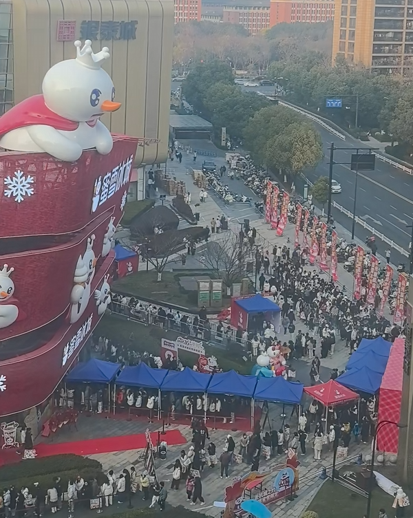
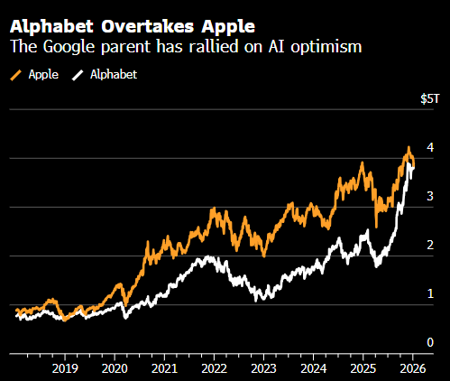
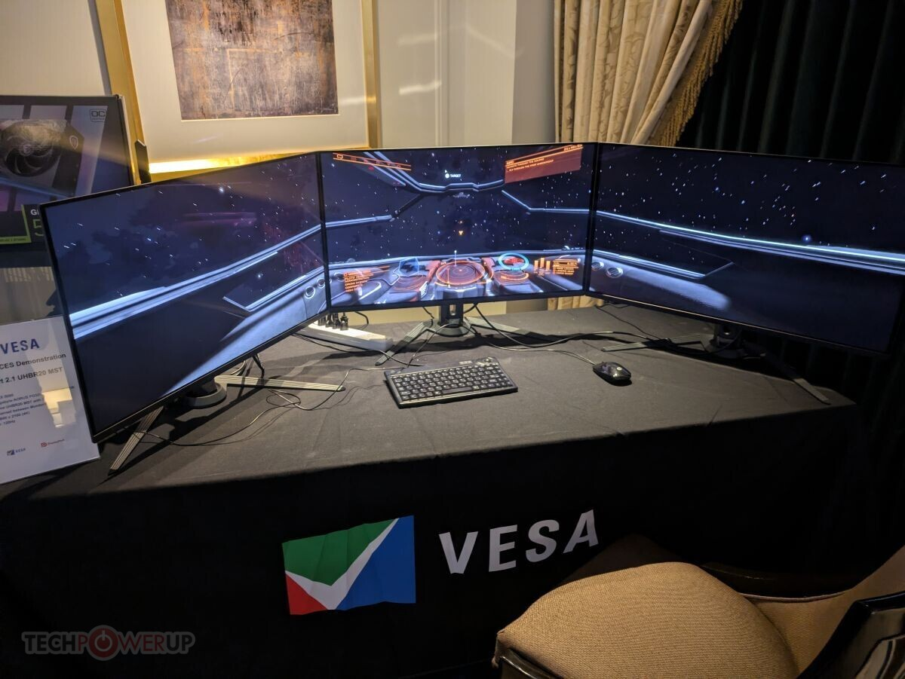
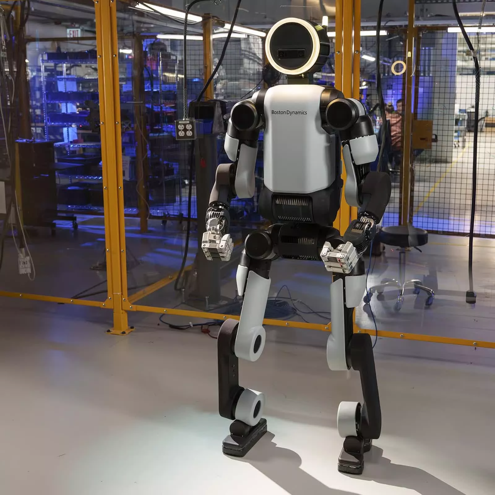

阿仙奴今晨於英超大戰利物浦，雙方互有攻守但均未能將皮球送入網窩，最終以0：0言和。阿仙奴未能把握曼城和阿士東維拉早一日失分擴大優勢，在榜首以6分領先。曼聯炒教練後的震盪未止，球迷不滿會方的管理，直斥拉傑夫是「無能的小丑」，並計劃發起抗議行動。至於被炒的艾摩廉，被傳有可能接替摩連奴在賓菲加的帥位。
阿仙奴今晨於英超大戰利物浦，雙方互有攻守但均未能將皮球送入網窩，最終以0：0言和。阿仙奴未能把握曼城和阿士東維拉早一日失分擴大優勢，在榜首以6分領先。曼聯炒教練後的震盪未止，球迷不滿會方的管理，直斥拉傑夫是「無能的小丑」，並計劃發起抗議行動。至於被炒的艾摩廉，被傳有可能接替摩連奴在賓菲加的帥位。

香港科技園公司參加美國消費電子展（CES），參展企業數目更是歷屆最大規模，香港科技園公司行政總裁黃秉修對此感到非常興奮，很期待會取得更好成績，再創高峰。他認為近年香港創科越來越成熟，產品質量也有提升，提供的解決方案更符合國際市場，希望未來帶更多企業出海，以顯示香港創科的活躍及成熟程度。
今年香港科技館繼續涵蓋五大創新領域，包括「先進電子及機械人」、「先進物料及可持續科技」、「人工智能與數據」、「數碼轉型 」及「生命健康科技」。被問到未來會專注那些方向，黃解釋這些領域涵蓋範圍很大，科技園未來負責發展及營運的新田科技城「INNOPOLE」，將會特別關注如何推動AI應用，尤其是AI賦能不同技術的應用，但其他範疇科技園都會密切留意，以增加香港的競爭力。
至於會如何加強對企業的支援，讓他們更好地「走出去」找生意，他表示科技園一直都有檢視情況，近年企業發展越趨成熟，更需要走向國際化，故協助他們與更多國際投資者、合作夥伴聯繫的工作更為重要。他更指出，隨着越來越多內地企業經香港「出海」，看到國際投資者開始更重視亞洲的項目，相信這個勢頭會延續。
另外，今年是國家「十五五」規劃開局之年，焦點仍圍繞新質生產力、科技創新等，黃秉修表示科技園一直配合國家的五年規劃發展，重視科技興國、推進科技及新質生產力，重申香港是超級聯繫人及超級增值人的角色，既可支援國家企業走出去，又可吸引國際人才走入來，未來會繼續加強這些方面的發展。
記者：郭詠欣 美國拉斯維加斯報道

香港科技大學近日舉辦「海上講堂」海洋科普教育系列活動，並邀請執行中國大洋93航次的「深海一號」科考隊成員與參加者互動，探索印度洋海洋生物多樣性的奧秘，吸引來自香港與青島兩地共300名中小學生參與。科大海洋科學系講座教授錢培元接受《星島》專訪時表示，通過「海上講堂」這類實踐活動，有助激發學生的興趣，引導他們主動探索有關海洋的知識，「這種生動直觀的科普形式，比教科書更具吸引力。」
科大聯同南方海洋科學與工程廣東省實驗室（廣州）及自然資源部第一海洋研究所，於日前舉辦「海上講堂」海洋科普教育系列活動二—「探索印度洋的奧秘」，活動吸引170名及130名分別來自香港及青島的中小學生參與。大會更邀請正在執行中國大洋93航次的「深海一號」科考隊成員與現場連線，實時互動並解答學生提問，協助學生建立對深海生態系統的科學認知。
身兼南方海洋科學與工程廣東省實驗室（廣州）副主任的科大海洋科學系講座教授錢培元向本報記者表示，推動海洋科普正是希望「以學生為紐帶，帶動社會認識海洋」，並培養他們明辨是非的能力。在教學方法上，他認為應從傳統被動授課轉向啟發式教學，通過「海上講堂」這類實踐活動激發學生興趣，引導他們主動探索相關知識。
他指出，海洋領域仍有 95% 的區域處於未知狀態，蘊含著無限的機遇，不僅是海洋科學家的研究方向，更可供年輕人未來繼續進行研究。能源、資源、社會可持續發展等諸多問題的答案，都有可能藏在這片未知的海洋之中。
針對學校層面如何加強教育，幫助學生建立本地環境意識與全球海洋議題認知，錢培元稱，海洋科學是涵蓋生物、化學、物理、地質等學科的複雜交叉領域，還與人文文明發展息息相關。過去香港學生的視野較為局限，僅關注周邊海域，例如解決沿海污染等問題。他指近年隨着香港與內地的交流持續增加，情況已有所改變，但在對接國家海洋戰略上，仍需持續發力。
另一方面，錢培元目前正領導兩項聯合國「海洋十年」項目，並積極與聯合國教科文組織溝通。他透露，計劃將「海上講堂」升級為與聯合國合作的全民教育平台，推動海洋科普走向國際化。
記者 佘丹薇
「深海一號」科研隊與港生連線上課 攜「蛟龍號」載人潛水器月底訪港
白宮於本周三投下外交震撼彈，美國總統特朗普正式簽署總統備忘錄，宣布美國將退出多達66個國際組織及機構，理由是這些組織「浪費資源」及「威脅國家主權」。是次「退群」行動牽涉範圍極廣，這份名單主要針對氣候變化、勞工權益、人權及性別平等相關議題的組織，令國際社會對全球合作前景深感憂慮。
特朗普在備忘錄中明確指示，要求暫停美國對這66個國際組織、機構及委員會的所有支持。特朗普政府將這些議題標籤為迎合多元化的「覺醒」（Woke）倡議，認為其功能重疊且管理不善。據悉，被點名的組織包括聯合國人口基金、多個涉及非洲事務的特別機制，以及多個與氣候合作相關的平台。

在名單中，最受矚目的是確立全球氣候談判基礎的《聯合國氣候變化框架公約》（UNFCCC）。該公約自1992年簽署以來，一直是《巴黎協定》的根基。由於特朗普一向將氣候變化視為「騙局」，自去年重返白宮後已宣布退出《巴黎協定》，如今連母約亦一併背棄。
此外，專門提供氣候科學評估的「政府間氣候變化專門委員會」（IPCC）亦在名單之列。專家警告，美國作為全球主要排放國及經濟體，其退出將令抑制溫室氣體的努力受阻，更會給予其他國家藉口推遲減排承諾。
針對美方的激進舉動，前白宮國家氣候顧問麥卡錫批評此舉「短視、令人尷尬且愚蠢」，認為這會削弱美國在國際舞台上的影響力。中國外交部發言人毛寧昨日亦回應指，美國「退群」已非新鮮事，強調唯有多邊體系有效運行，才能防止「強權即真理」的叢林法則蔓延。
事實上，特朗普回朝後已先後宣布退出聯合國教科文組織、世界衛生組織及聯合國人權理事會。是次大規模撤出，被視為其「美國優先」政策的終極體現。

2026教育趨勢│港府積極推廣「留學香港」品牌，推動香港成為「國際專上教育樞紐」，在此氣氛帶動下，有百年私校落戶香港開設海外分校，亦有辦學團體正籌備全新國際學校。此外，教育局向全港直資學校發信，邀請有足夠資源及條件許可的直資學校申請「直資擴容」，上調班級數目或每班學生人數，直資中小學可分別增至最多45人和37人一班，相信本地的國際化教育會更受海外生重視。

已定於2026年9月開學的香港包玉剛學校（Hong Kong Y.K. Pao School），乃包玉剛教育基金會在香港首間「一條龍」國際學校，辦學團體早於2007年在上海創立上海包玉剛實驗學校，着重中英雙語教學，連續六年被《胡潤百富》及《福布斯中國》評選為「中國最佳國際化雙語學校」，歷年畢業生成功獲得全球頂尖學府錄取，包括常春藤盟校、牛津大學、劍橋大學、加州理工學院及全球前30名的頂尖學府。香港校首學年開設PYP IB課程，招收Year 1至Year 3適齡學童，約共100個學額。學校早已獲教育局分配位於九龍塘玫瑰街4號的空置校舍，正全面翻新及加建教學大樓、體育館與各種特別室，預計2028年竣工。明年開學會在油塘的校舍上課，暫定全年學費為22萬港元，可分10期繳交（待教育局批准）。

具百年歷史的英國女子私立名校North London Collegiate School（下稱NLCS），明年在香港開設其第五所海外分校「北倫敦書院」，將會是一所12年制男女校。NLCS自2011年起，先後於韓國濟州、杜拜、新加坡、日本神戶開設海外分校，英國總校是英國歷史最悠久的女子學校之一，2025年NLCS在IB成績平均分達42.9，位列全英國第一，超過40%學生升讀全球前20名的著名大學。北倫敦書院將如其他海外分校一樣，定期接受專家評估，當中包括來自英國總校的專業人士，確保辦學質素。

說到IB教學，剛於10月更新的2025年全球100大IB學校（Global Top IB Schools），頭10位不乏本地學校，可見香港的IB成績的確厲害，位列全球第一的Letovo School是一所男女寄宿私立學校，採用雙語教學，學生畢業時可同時獲得俄羅斯和國際文憑。

文：劉佩樺 圖：資料圖片
西班牙超級盃4強，皇家馬德里在基利安麥巴比養傷缺陣下，硬撼馬德里體育會。「銀河艦隊」最終以2：1擊敗馬體會殺入決賽，周日深夜與巴塞隆拿爭奪冠軍。
皇馬於77秒便憑一記靚波開紀錄，費達歷高華維迪主射30碼的罰球，炮彈式射門皮球直飛門將的右上角，馬體會門將奧比歷飛盡雖摸到皮球，但仍然無法阻止皮球入網。28分鐘，皇馬一次反擊機會，洛迪高高斯在禁區內扣過馬體會守將後單刀起腳，但被奧比歷撲出。33分鐘到皇馬門將泰拔高圖爾斯表演，馬體會前鋒阿歷山大索洛夫接應角球，在近柱頭槌攻門，皮球被高圖爾斯托走。35分鐘索洛夫再有攻門機會，但無人看管下的近門頭槌高出。皇馬半場以1：0領先。


換邊後，皇馬於55分鐘擴大比數。洛迪高接應華維迪的傳球，推過馬體會守將大衛漢斯高，單刀射破奧比歷的十指關，銀河艦隊領先2：0。馬體會於58分鐘追近比數，索洛夫今次的近門頭槌，頂破高圖爾斯鎮守的皇馬大門，以馬體會落後1：2。馬體會於86分鐘一次角球傳給K角位附近的馬高斯洛蘭迪，他起腳燙遠柱僅僅斜出。皇馬最終以2：1擊敗馬體會，殺入西班牙超級盃決賽，將於周日深夜大戰巴塞爭冠。

美國明尼蘇達州發生涉及聯邦執法部門的致命槍擊案，當地1月7日，移民及海關執法局（ICE）執法人員在明尼阿波利斯市街頭截查一輛黑色七人車期間，連開多槍擊斃女司機。事後死者身份曝光，證實為37歲育有三名子女的美國公民Renee Nicole Good。事件觸發執法過當爭議，州長更與聯邦政府隔空對壘。
事發於周二早上，當時ICE人員正在該市南部一處住宅區進行執法行動。據目擊者及傳媒披露，Renee當時駕駛其本田七人車，疑與正在截查的執法人員發生口角。當她試圖駕車駛離現場時，一名執法人員向駕駛室連開數槍，Renee頭部中彈身亡。
明尼蘇達州民主黨籍參議員Tina Smith隨即證實，死者是土生土長的美國公民，並對ICE在居民區動用致命武力表示深切憂慮。然而，國土安全部（DHS）隨後發聲明，反指死者為「國內恐怖分子」，稱其當時試圖利用車輛作為武器衝擊執法人員，迫使人員開槍自衛。州長華茲（Tim Walz）則發文反擊，呼籲公眾警惕聯邦政府的「虛假宣傳」。
隨著死者身份公開，Renee的生平細節亦陸續曝光。她於2020年在維珍尼亞州的奧多明尼昂大學修讀創意寫作，憑藉優秀詩歌作品榮獲獎項。她在社交平台的簡介中自稱為「詩人、作家、妻子和母親」，常於網上分享生活點滴，並在Instagram賬戶上填寫象徵性小眾的驕傲旗幟表情符號。
美媒普遍報道，Renee的背景顯示其並非一般的激進分子。其母親Donna Ganger接受訪問時強調整個家庭深陷震驚，指女兒生性溫和，絕非那種會挑釁執法人員的人，相信當時是因為「極度恐懼」才試圖離開。
Renee的家庭生活亦令人心酸。她經歷過兩段婚姻，留下一名15歲女兒及兩名分別為12歲與6歲的兒子。她的第二任丈夫Timmy Ray Macklin Jr.已於2023年不幸離世。其前公公表示，計劃接回年幼的孫兒照顧。
槍擊案發生後，現場流出的一段短片更顯示，一名自稱是Renee妻子的女子趕抵現場後失控哭喊：「你們剛才殺了我的妻子！」目擊者Tyrice Jones向媒體表示，該名女子隨後帶同愛犬坐在前院哀號，臉上沾有血迹。
目前，明尼蘇達州刑事局（BCA）已介入調查，釐清執法人員當時是否有必要開槍，以及是否違反相關程序。
法國超級盃決賽，巴黎聖日耳門（PSG）87分鐘失守落後，眼見快要輸波飲恨之際，憑干卡路拉莫斯於95分鐘戲劇扳平。PSG最終更在互射12碼以4：1取勝捧盃。


PSG憑奧士文尼丹比利於13分鐘打開紀錄。但馬賽於下半場中後段連入兩球反超前，先是美臣格連活特於76分鐘射入12碼扳平，87分鐘憑PSG守將威廉柏爾擺烏龍，馬賽反超前2：1。PSG於95分鐘憑干卡路拉莫斯戲劇扳平2：2。
兩軍要以互射12碼分勝負，PSG門將盧卡斯捷華利亞成為贏波功臣，他分別救出馬賽頭兩輪、奧列尼和咸特查奧爾操刀的12碼；先射的PSG 4輪全部中鵠，在迪斯亞杜伊將皮球送入網窩後，PSG在互射12碼以4：1擊敗馬賽，連續4屆捧走法國超級盃。
香港科技園聯同貿發局，率領61間創科企業參加在美國拉斯維加斯舉行、全球最具影響力的科技盛會美國消費電子展（CES），規模創歷屆參展之冠。不少參展企業認為，科技園帶他們走上國際舞台，能更好接觸潛在客戶，有助加快公司發展及融資。
初創企業Dentomi在現場舉辦產品簡介會，分享其智能口腔健康護理方案GumAI如何實現「隨行牙醫」的體驗，用戶只要跟隨指示拍攝牙齒及牙齦，再透過AI分析口腔情況，有需要時AI更會為用戶提供照顧口腔的方案，例如教用戶如何更好地刷牙及使用牙線等。
該公司共同創辦人暨行政總裁周俊宏本科在廣州讀牙醫，他指看到長者要凌晨於公立牙科診所排隊很辛苦，私家牙科收費對基層來說亦偏貴，故思考要如何幫市民更好照顧口腔健康，因為口腔健康轉差影響很大，包括增加家庭壓力等，而利用AI分析是希望將牙醫以可負擔的形式帶入屋，透過早期預防手段，教育及改善市民對口腔健康的重視，達致將口腔疾病停在開始前。
他來CES參展是看到海外國家看牙醫更有困難，如美國市民若居於偏遠地區，或要駕車兩小時才可看到牙醫，相信其產品對大眾有很大幫助，首兩天有來自韓國、意大利等機構表示有興趣合作，對行情感到樂觀。他更強調，科技園品牌名聲好，縱然該公司沒有強大背景，很多有意合作的夥伴對其公司都很有信心，且科技園幫助他們與知名企業取得聯繫和支持，令項目前期工作更順利，非常期待能在科技園及香港的創科生態系統內繼續壯大。
專注開發應用AI數碼廣告管理平台的GoGoChart，該公司創始人兼行政總裁魯曉聚表示，公司成立之初是專注手機應用程式開發及推廣，隨市場飽和，再轉做一些電商、數碼廣告推廣等工作，最重要是為客戶找到客戶，不斷研發技術的目標是應用AI簡化市場推廣。
他在科技園舉辦的午宴中，向來自各地的企業及投資者介紹，香港不只是低稅率，還可接觸到內地市場，若企業涉及硬件或人才，特別是開發人員和程序員，香港有很多相關人才資源，亦有不同的試點計劃，可試驗任何新概念或新想法，強調香港是一個很好的地方來測試產品和服務。
他續稱，香港市場很小，要擴大公司發展便要更好利用不同的國際舞台，舉例自己首次於釜山參展時展示了產品和服務，獲得第一名海外客戶，讓更多潛在目標受眾看到，強調參展是十分重要。他今次首次來到CES，是因為投資者希望公司擴展業務至美國，並獲香港駐美經貿辦事處和科技園的支持下，引薦與美國及其他國家的企業、機構等會面，目前已有初步合作方向。


記者：郭詠欣 美國拉斯維加斯報道

馬里韌力極強，加上防守專注，勇悍路數兼備，絕不輕言被擊敗。該隊防線有身材高大的中堅艾度拉耶迪亞比鎮守中路下，有力於今晚非洲國家盃8強與頭重腳輕的塞內加爾周旋到底，讓球受讓半球/一球的「主勝」開出機會不低，一於直取。
以A組次名身分出線的馬里，整屆賽事一直表現硬淨，分組賽即使面對精銳盡出的主辦國摩洛哥亦能各一言和，而上輪16強則在26分鐘便少打一人下，法定時間補時6分鐘追和突尼西亞1:1，最終更以互射12碼淘汰對手，足證難以被擊敗。
數據上，馬里場均成功截斷對手傳球12.3次及22.8次成功攔截，兩項數據均屬非國盃24隊最多，同時場均成功前場逼搶5.3次則排第3，反映出無論防守的路數、侵略性及積極性都幾乎冠絕各隊，正好解釋馬里為何整屆賽事4戰全和亦可殺入8強。
而馬里今場要繼續展示不屈精神，中堅艾度拉耶迪亞比必成關鍵先生。這位25歲的中堅本已有1.95米的身高優勢，加上今屆賽事場均3.92次成功空中爭奪，爭贏率高達94.4%，可見其空中威力。而這位效力瑞士超草蜢的中堅不但防守稱職，場均亦能交出3.9次成功長傳，策動反擊頗有一手。表現如此全面，迪亞比勢可再領馬里繼續堅壁清野之餘，甚至有力助球隊伺機偷襲。
至於塞內加爾雖然16強以3:1輕取蘇丹，中前場亦有沙迪奧文尼等球星領軍，不過並非每位射手都有十足表現，如拜仁慕尼黑中鋒尼古拉斯積遜就只在分組賽對弱旅博茨瓦納入過波，愛華頓的翼鋒伊利文尼戴耶則入球助攻欠奉。再者，塞軍場均18.8次犯規是賽事24隊中第2多，後防或會再在危險地帶輸罰球，頗有隱憂。預料客隊未必讓得起半球/一球，取讓球「主勝」更合理。加利李爾


最近有網民在社交平台Threads以「不如講吓你遇過最無禮貌嘅藝人嘅經歷 」為題開出討論，不少人留言參與話題，短短兩日已有過千人留言，當中真假難以區分，不過有位TVB小生就留言還擊，更指：「關於我嘅真係得淡笑」。
這位TVB小生便是林子善，事關他被點名，有人留言說：「林子善，之前去佢間龍鳳冰室食常餐，米粉個湯好似清水健咁清，咁岩林生係到，同佢打個招呼，順手講聲個湯真係無味，點知佢一句，『係咁架啦，唔岩食下次咪唔好X黎囉』。但亦有網民在這個留言下力撐林子善人品，指：「林子善勁 nice 喎 之前喺將軍澳壽司郎見到佢哋一家我跌咗嘢佢仲幫手」、「但我之前返餐廳成日見到佢（將軍澳）佢都好 nice今就上個月既事 經常一家三口黎佢老婆都好有禮貌」。
林子善亦有現身說法，更指「關於我嘅真係得淡笑」，他留言說：「喺度睇咗咁多留言！關於我嘅真係得啖笑，唔係想得失大家，而係有網民想俾我知道有人講緊我add咗我入嚟，對我一啲指控真心，我一向做人都係禮貌待人行先，睇過啲事根本都冇發生過，吹得就吹，有陣時做人唔好咁啦，真心對我一啲傷害都冇，但如果做呢啲事令到你可以舒緩吓嘅絕對冇問題，作為一個公眾人物都係娛樂下大家，但可以睇到呢啲人絕對冇接觸過我，認識我嘅人，知道我對人一向都有禮貌有家教，新聞嘅嘢有陣時我哋自己都費事越描越黑，所以不作解釋，好多都係標題黨，祝大家生活愉快，其他嘅嘢唔再一一回復了。」


天文台連續兩日發出霜凍警告，繼前日之後，昨日（8日）下午4時30分再發警告，提醒農友及有關人士，今早（9日）新界內陸可能出現地面霜，天文台亦在facebook專頁上載有市民在大埔和粉嶺，拍攝到草叢、農田和汽車出現結霜情況。
《香港01》今日（9日）凌晨前往粉嶺坪輋路一個士多啤梨園一帶了解，多輛私家車車頂和擋風玻璃及椰菜田「變白」，舖上一層薄薄白霜，溫度計顯示氣溫約為攝氏0.8度，相對濕度高達99%。
其間園主林先生返回士多啤梨園，表示今日「呢個時候係凍啲」，但自己已經習慣，「準備收返士多啤梨嚟去旺角賣」，同時展示成品，每顆士多啤梨都又大又紅，林生強調即使寒流襲港，但「士多啤梨冇嘢，愈凍愈靚」、「唔會變壞」、「0度差唔多最靚」，但林生指出「再凍啲（0度以下），（士多啤梨）都會凍死」，但目前氣溫仍然合適。
林生指出，自己有10多年種植經驗，最初一至兩年缺乏知識，所以農作物都會凍死，但之後從失敗中學習，根據天氣種植時令蔬菜和生果，較早前開始種椰菜和士多啤梨，所以農作物如今在寒冬中照樣欣欣向榮。
另外，《香港01》亦抵達天文台提及過的粉嶺丹竹坑村，根據溫度計顯示，當時氣溫約為攝氏8.2度，相對濕度只有46%，但草叢有水珠，當時未有出現結霜情況。


日本山梨縣上野原市和大月市交界處的扇山1月8日發生山火，火勢至翌日早上仍未受控，縣政府已向自衛隊提出派救災人員協助的請求。上野原市政府擔心火勢會進一步蔓延，因此已向山腳地區76戶家庭共143人下達了疏散令。
日本放送協會（NHK）報道。扇山8日上午發生山火，消防部門隨即出動直升機灌救，但火勢仍未得到控制。
消防部門相信，火勢源於徒步小徑旁的長椅和其他物品，起初附近堆放的木柴燃燒猛烈，火勢隨後蔓延到周圍的樹木和山坡上的枯草。火勢最初向山頂蔓延，但後來又向山腳蔓延。
消防行動8日入夜後一度暫停，並於當地時間9日早上5時30分左右恢復，直升機灑水滅火行動則將於早上8時開始。


現年35歲的「五索」鍾睿心去年初高調承認與66歲、身家以百億計的大生銀行主席馬清鏗父女戀，二人拍拖踏入第10年，育有4名子女，五索因而獲封「最強小三」之名。五索當時曾豪言「我住山頂，你哋住秀茂坪」，一炮成名。過去一年她不時曬出搭頭等艙、商務艙，住山頂豪宅、周遊列國的豪華生活，維持貴婦形象。五索毫不介意被人稱做小三，愈來愈高調，不時激讚馬生是好爸爸和好老公。五索與裕美林作分道揚鑣後，雖然指打算改變拍片風格，但仍不改炫富本性。日前她曬出「可能是全球首個Hermès」，多次強調不用配貨，以示她受大牌子重視！
五索曬出價值40萬港幣的Hermès手袋，她指該款手袋於2024年12月推出，並在紐約買到，她說：「呢隻皮、呢隻款，可能係全世界第一隻售出嘅！」五索多次提到，在不用配貨情況下得到此袋，「可能佢後尾Background check咗馬先生係邊個，佢竟然唔使配貨嘅情況下，畀咗呢個袋我哋啦。」五索坦言不用配貨得到「全球第一個愛馬仕」：「實在令我好興奮。」五索又指着品牌標誌說：「金係永恆，我最鍾意嘅。」
除了狂讚高級潮流又實用，她又「鄭重道歉」說：「我鄭重道歉，我而家好鍾意愛馬仕，愛馬仕係全球最靚嘅袋，同埋開心嘅標準。」五索最後「教路」：「愛馬仕唔一定要配貨，如果佢知道你係一啲知名人士或者富豪，就會畀你。」
五索曾上練美娟和衛詩雅的網上節目《絲打圍爐》訪問透露，自己在街市長大，曾想過知識改變命運，在大學修讀媒體，目的是想參選港姐，從而結識有錢人，終極目標亦是成為豪門闊太。她表示在交友app認識大9年的前夫，對方家底不俗住獨立屋。五索大學一年級、仍未畢業便與前夫奉子成婚，當時她只是23、4歲，但雙方仍未準備好做人父母，磨擦漸多，最後因「性格極度不合」離婚。五索說：「第一段婚姻，以前一直好戀愛腦，生完即刻勁後悔，當時有咗先結婚。死啦，真係好唔鍾意呢個人，但因為面而離婚，因剛結完又離好核突。」
五索直認因貪錢，才與身家以百億計的大生銀行主席馬清鏗交往。但她提到，很怕與有錢「二世祖」相處，她解釋：「試過坐跑車，有人會幫我開車門，後來發現原來係怕我啲指甲刮花佢架車，所以唔鍾意二世祖，或太後生嘅男仔，好多都係靠daddy，睇落好有錢，其實啲錢係佢daddy，所以乜都要好聽daddy講。」她認為真正有錢人說話較有內涵。
曼聯過去一周經過炒教練的震盪，魯賓艾摩廉被解僱，目前由費查擔任看守領隊。曼聯球迷對於會方管理層的不滿去到頂點，球迷組織「The ’58」狠批拉傑夫是「無能的小丑，令球會淪為笑柄」，他們還計劃下月主場鬥富咸一役發起抗議。
The ‘58有近10萬名會員，組織發言人由股東拉傑夫、行政總裁貝拉達、足球總監韋確斯，以至格拉沙家族逐個炮轟：「在經歷一個又一個災難後，拉傑夫的表現像無能的小丑，球隊不但沒有達成所謂的『業內頂尖』，反而淪為笑柄。這幾天曼聯的表現令人震驚且深感不安。球場上，我們看到一支平庸的球隊，缺乏身分認同、方向感和野心；球場外，混亂情況更甚。據報這項決定（解僱艾摩廉）得到貝拉達的同意，他缺乏經驗，只聽親信投訴，而非獨立地領導。我們再次目睹曼聯由一群在邊做邊學的高層掌管，代價卻是球隊的成績、穩定性和公信力。」


該球迷組織認為管理層目前形成「毒性橫行的合夥組織⋯⋯格拉沙家族繼續在頂層榨取金錢，拉傑夫和旗下公司INEOS則在底層壓榨球迷。他們聯手將世上最偉大球會，當作街坊士多般經營，斤斤計較、目光淺窄，而且完全缺乏願景。」The ‘58呼籲向持有人、貝拉達和韋確斯投下不信任投票，但他們強調這並非為艾摩廉的戰績護航，但他被解僱是再次暴露會方的管理問題。
他們計劃在2月1日於奧脫福鬥富咸的比賽發起抗議行動：「曼聯擁有150年歷史，這份由幾代支持者建立的驕傲歷史必須得到保護。如果我們現在不採取行動，我們傳承下去的球會將變得面目全非，其文化、靈魂和人民都將被剝奪。對於拉傑夫和格拉沙家族來說，這場遊戲已經結束，時間已到。我們不能再忍受，並呼籲球迷加入大型抗議行動。」

路透社引述四名知情人士透露，美國政府官員正積極討論一項前所未有的計劃，建議向格陵蘭居民一次性支付高額款項，以此誘使當地人支持脫離丹麥統治，進而加入美國。據報，美方官員曾探討向每位格陵蘭居民發放1萬至10萬美元（約7.8萬至78萬港元）不等的補償金。若以該島約5.7萬人口計算，涉及總額最高可達60億美元（約468億港元）。
報道引述知情人士指出，收購格陵蘭的構思並非新鮮事，早在特朗普就職前，其助手已開始研究如何取得這個北極戰略重地。然而，隨着美軍於1月3日對委內瑞拉發動突襲並成功擒獲總統馬杜羅，白宮內部認為目前地緣政治勢頭正盛，遂令收購格陵蘭的討論變得更具緊迫感。
消息稱，白宮助手們正急於利用在委內瑞拉取得的「外交紅利」，實現特朗普長期的領土擴張目標。有官員認為，若每人派發10萬美元，對於只有5萬多人的島嶼而言是一筆足以令當地民意轉向的巨款，對美國財力而言亦完全可以負擔。
除了直接金錢收購外，白宮亦在討論多種法律與外交途徑，包括參考美國與帕勞、馬紹爾群島及密克羅尼西亞等太平洋島國簽署的《自由聯合協定》（COFA）。在該框架下，美國將為格陵蘭提供國防保護、郵遞服務及貿易免稅等基本服務，作為交換，美軍可獲准在當地自由行動並設立基地。
不過，此方案的前提是格陵蘭必須先行從丹麥獨立。目前丹麥及格陵蘭自治政府已多次公開強調「格陵蘭不賣」，丹麥更警告美方的野心將危及北約內部的團結。


80年代曾演劉德華女友、首位參演荷里活片當女主角的港星劉雅麗，現年近70歲的她狀態極佳，分享了淡出影壇後的傳奇經歷。劉雅麗當年嫁給美籍丈夫後定居美國，轉行經營進口批發業務長達25年。她坦言中西文化難磨合，為了兒子隱忍多年，直到60歲生日當天正式離婚，瀟灑形容這是「最好的生日禮物」。如今她獨居拉斯維加斯，每日種菜、旅遊，享受愜意的退休生活，其混血兒子亦繼承衣缽從事舞台藝術，且能說一口流利廣東話。
最近，劉雅麗聯同羅嘉良去到三藩市開騷，她將兩人的合照放上社交平台，並寫上：「很久沒有見嘉良，二十多年前大家合作過一個電視劇「街市的童話」，今次在三藩市和他第一次同台，合作得非常愉快！」
不過網民卻將重點放在的臉上，並不留情面的批評，有人留言道：「羅嘉良以前好靚仔，但係佢依家個樣殘咗好多，佢塊面啲肌肉鬆弛咗好多，變咗摷皮鴨」、「羅嘉良面色嘛嘛⋯⋯有啲黃 」、「撈家係咪之前有大病？個樣好殘？ 」等等。
全球零售業正經歷前所未有的洗牌，擁有逾80年歷史的平價傢俬「老大哥」、瑞典巨頭宜家家居（IKEA），也面臨Amazon、阿里巴巴（9988）旗下天貓，以至Shein等電商所掀起的價格戰衝擊。集團現時正進行大規模戰略重整，不僅打破數十年傳統，由非瑞典裔人士執掌最高領導層，更豪擲7.2億歐元（逾65億港元）收購位於波羅的海的森林以穩固供應鏈，試圖在數碼洪流中築起護城河。此外，宜家近年已嘗試在人口較少城鎮開設新店型，並於大型門市實行一種新的混合模式，以拓展線上服務。
綜合媒體報道，宜家一直堅持減價策略，吸引手緊的消費者，並在競爭激烈的市場中擴大市佔率，但這一策略也讓企業付出了顯著代價。在美國關稅影響導致成本上升的情況下，截至去年8月底，集團營業利潤按年急跌26%至17億歐元，年收入亦由265億歐元降至263億歐元，全球門市銷售額連續第二年下滑，由451億歐元降至446億歐元。

麥肯錫資深合夥人Clarisse Magnin直言，市場遊戲規則已徹底改寫，「電商平台大規模地整合了採購、物流和客戶覆蓋面，即使是最大的老牌企業，也不得不面對衝擊」。
為應對這場被內部員工稱為「宜家史上最大轉型」的變革，集團打破了數十年的不成文規定，由非瑞典籍CEO掌舵，其中包括波蘭籍的Jakub Jankowski在今年1月1日正式接任Inter IKEA Group行政總裁。至於負責營運全球大多數門店的宜家母公司Ingka Group，則由西班牙籍的Juvencio Maeztu掌舵。


此外，宜家的改革主要集中在擴大產品線，拉近門市與顧客距離，以及加快配貨速度等。回顧過去數十年的擴張路徑，宜家通常先在紐約及巴黎等大城市的郊區開設大型門市，待市場成熟後再逐步向市中心滲透。不過，近年宜家已嘗試在人口約10萬至20萬的中型城鎮，開設名為 「Lada」（瑞典語意為「穀倉」）的新店型。至於現有大型門店則轉型為「混合模式」，既是陳列室，也是支援線上訂單的物流中心。

Juvencio Maeztu強調，實體門店仍是宜家品牌體驗的核心支柱。但面對天貓及Shein等紛紛跨界拓展家居用品與家具業務的電商競爭者，正計劃推行更激進的定價策略，實施嚴格成本控制，並加速拓展全渠道融合模式，以鞏固市場優勢。Jakub Jankowski亦明確表示，將致力於讓產品更實惠，目標是將價格恢復到疫情前水平，以挽回飽受通脹之苦的消費者。

另一方面，宜家轉型戰略的另一關鍵是確保核心原材料——木材的穩定供應。受俄烏戰爭影響，宜家被迫切斷俄羅斯和白俄羅斯的木材供應，而為了填補缺口並掌控原材料定價權，集團加大了在中歐和東歐的投資。
去年10月，Ingka Group旗下資產管理公司斥資7.2億歐元，從瑞典林業協會Södra手中收購位於拉脫維亞和愛沙尼亞共15.3萬公頃的林地資產，令宜家家居擁有的自有林地總面積突破33萬公頃，一躍成為波羅的海地區最大的私人森林擁有者之一。有分析認為，宜家此舉意在通過供應鏈垂直整合，以對沖地緣政治衝突帶來的供應鏈風險，同時緩解原材料價格波動對利潤的侵蝕。

零售市場競爭的核心焦點，正轉向更高性價比與更親民價格。宜家近年亦推行「再創低價」計劃，試圖以更具吸引力的價格留住消費者，其中宜家中國在新財年投入1.6億元（人民幣，下同 ）聚焦和推廣150款「再創低價」產品。另外，宜家中國日前公布，2月2日起將停運7間內地門市，未來將從規模擴張轉向精準深耕，計劃兩年內開設逾10家小型門市，並加強線上布局。

宜家推行「再創低價」計劃後，有關策略的市場反響已初步顯現在社交平台上。有港人消費者分享宜家購物體驗時表示，一套僅售39.9港元的連蓋食物盒「好抵買」；亦有台灣顧客對新產品讚不絕口，稱「除了可愛已經沒有別的形容詞」，印證了平價且兼具設計感的商品仍具備強勁市場吸引力。


另據內媒《第一財經》報道，宜家中國透露2026財年計劃推出超過1,600件家具及家居新品及23個新品系列等，並將在新財年投入1.6億元，聚焦和推廣150款「再創低價」產品，其中70%的投資，將集中在最受消費者喜愛的暢銷產品上。在過去兩個財年，宜家中國已累計投資6.73億元，以推出更多「再創低價」產品。


美國突襲並擄走委內瑞拉總統馬杜羅（Nicolás Maduro）後，國會議長、代理總統羅德里格斯（Delcy Rodriguez）的哥哥豪爾赫（Jorge Rodríguez）1月8日宣布將釋放大批外國和委內瑞拉籍囚犯，聲稱此舉是為了展示委方鞏固和平的姿態。
英國《衛報》及路透社8日報道，豪爾赫當日表示，釋放囚犯的舉動體現了委方堅定不移致力於保障該國的和平，並促進所有人，無論政治、宗教、經濟或社會差異都能和平共處。
西班牙外交部證實，這次有5名西班牙公民獲釋，其中一人是擁有西班牙、委內瑞拉雙重國籍的人權律師米格爾（Rocío San Miguel）。
米格爾2024年2月因涉及一宗被指針對總統馬杜羅的刺殺行動而被捕，並遭指控犯下叛國、恐怖主義等罪。
目前尚不清楚具體有多少人獲釋，但在委內瑞拉開展工作的人權組織估計，該國關押着800至1000名政治犯，另有40多名外國公民在該國被拘留，其中包括約20名西班牙人和5名美國人。
不過，委內瑞拉總檢察長薩阿卜（Tarek Saab）等政府官員否認該國關押政治犯，稱被拘留者是因其他罪行而被捕。
今次參觀位於荃灣海濱花園一個實用面積579方呎單位，屋主為一對80後夫婦，二人斥資79萬元裝修，希望將空間徹底改造，以容納他們豐富的生活興趣和個人物品。Deco Farmer Studio的設計師Heiman透過巧妙的空間規劃和大膽的色彩運用，將原本平凡的3房單位轉變成富有生活趣味的創意空間，為他們打造了一個充滿色彩和個性的時尚家居。
走進單位，各種鮮亮的顏色及幾何圖案充斥眼簾，每個角落都充滿驚喜，讓人感覺玩味十足。Heiman了解屋主熱愛騎單車，並有兩部心愛的單車，但過去一直被迫隨意擺放，佔用大量空間且欠缺整理。於是，他在玄關位置利用玻璃間隔，設計出一個專屬區域，讓單車可以掛起來展示，既美觀又實用。他表示，「屋主回家後可以把單車放好、清潔乾淨，再進入室內空間，保持家居整潔」。
另外，玄關牆面還鋪設擁有黃、白、黑等幾何圖形的瓷磚，更設有黑紅色相襯的U型櫃，增加儲物空間之餘，還能形成視角衝擊。
經過玄關後便步入客廳，客廳主要採用了大地色調，為較細膩的色彩，相比其他區域更為柔和，但Heiman仍保留了色彩點綴，讓整體設計保持一致性。特別的是，在客廳牆內還藏有一面飛鏢靶，需要時則拉出，令普通的飯廳搖身一變成為娛樂空間，不僅可與彩色主題相呼應，亦充分體現屋主的個性和生活品味。
Heiman透露，單位原本的3房間隔並不適合屋主夫婦的生活方式，雖然兩人無計劃生育，但有眾多興趣愛好需要空間收納，包括單車、鋼琴、結他和各類收藏品等。因此，他大膽將3房改為2房，其中兩間房間打通成多功能空間，劃分為夫婦二人各自的獨立區域。
他解釋，男士區域可放置鋼琴、電腦、手辦模型及結他，女士區域則配置衣櫃集中存放衣物和化妝品。打通的空間以獨特的紅色中空纖維板間隔牆分隔，既保持了視覺上的通透感，又能清晰界定各自的領域。女士區域的衣櫃面板用黑白線條點綴，對應全屋的玩味風格。
若站在單位走廊的位置，屋主可發覺自己身處於一個色彩迷宮中，據Heiman介紹，不同房門都選用了不同的顏色，藍色房門是多功能空間，黃色房門為主人房，紅色房門則為廁所。他解釋，這種顏色運用不但美觀，更具有功能性，可以幫助區分空間用途。
本次整個翻新工程總費用約79萬元，訂製傢俬佔了相當大的比例，因為許多儲物和展示設計都需要專門訂製以配合屋主特殊需求。Heiman表示，「在設計過程中，我不會直接問客人喜歡甚麼風格，而是深入了解他們的生活方式和需求。」就像這對夫婦，發現他們有各種興趣，於是建議用顏色來連結這些元素，創造出一個既實用又有趣的空間。


阿仙奴今晨於英超主場迎戰利物浦，以0：0言和，錯失拉開8分的機會。「兵工廠」英超5連勝告終，賽後以49分續排榜首，領先曼城和阿士東維拉6分。
阿仙奴的爭標對手曼城和阿士東維拉，於早一日出場但和波失分。「兵工廠」今晨主場迎戰利物浦，只要贏波就能將榜首領先優勢擴大至8分。阿仙奴今場企穩陣腳後掌握控球權，兩邊的突破頗具威脅，包括16分鐘布卡約沙卡於右路突破，兩次精彩盤扭落底線後傳中，但隊友衝前未能接應。
但上半場最有威脅的埋門則來自利物浦，27分鐘一次直線被阿仙奴的威廉沙列巴包到，並回傳於門將大衛拉耶，但他沒有留意拉耶已出迎，令拉耶情急下將皮球向前踢，被利物浦的干拿巴特利截到，他隨即笠射但中楣彈出。阿仙奴於上半場末段始有較具威脅的起腳，44分鐘一次右路傳中被頂出禁區頂，迪格蘭賴斯隨即起腳被艾利臣比加沒收。緊接沙卡在12碼點附近接應傳送，但起腳被利物浦守將米路斯卻基斯瞓身擋出。兩軍半場互交白卷。


下半場利物浦形勢好轉，48分鐘域斯於禁區內被杜沙特疑似推跌，但球證沒有判12碼。阿仙奴於57分鐘有守將軒卡派爾傷出。利物浦的謝利美費林邦於右路多次突破，但傳中質素一般；阿仙奴於80分鐘有後備上陣不久的馬度基於右路傳中極具威脅，但沒有隊友趕及接應。81分鐘，利物浦中場蘇保斯拉爾禁區頂主射罰球高出。91分鐘，加比爾捷西斯接應右路傳中，無人看管下頂頭槌，艾利臣接實。
最終兩軍以0：0言和，阿仙奴錯失拉開8分的機會，賽後以15勝4和2負得49分，以6分領先曼城和維拉。利物浦則以10勝5和6負得35分，排在第4位。


美國國會參議院1月8日舉行程序性投票，決定推進一項由民主、共和兩黨議員共同提出的決議草案，以期限制總統特朗普（Donald Trump，又譯川普）在未經國會授權下，對委內瑞拉採取進一步軍事行動。特朗普隨後發文批評，倒戈支持推進議案的共和黨議員，不應獲得連任。
程序性投票以52票贊成、47票反對通過，共和黨籍參議員有5人倒戈投下贊成票。預計參議院下周將對該項決議草案正式表決。
參與發起這項決議草案的共和黨籍參議員保羅（Rand Paul）在投票前說：「轟炸別國首都並帶走其總統，無疑是戰爭行為。」
路透社指出，該決議即使在參議院獲得通過，也必須由共和黨控制的眾議院通過，且在參眾兩院均獲得三分之二的多數票，才能避免被特朗普否決。新華社引述美國媒體稱，據指眾議院將於本月晚些時候，進行類似投票。
在參議院投票結束後，特朗普在社交媒體上發文，指責保羅等投下贊成票的共和黨人，揚言他們「應該永遠不得再次當選公職」，並聲稱這項決議草案違憲，稱相關投票「嚴重阻礙美國自衛和國家安全，削弱總統作為三軍統帥的權力」。
特朗普於1月3日對委內瑞拉發起大規模軍事行動，強行控制委國總統馬杜羅（Nicolás Maduro，又譯馬杜洛）及其夫人，並將他們帶至美國。在特朗普政府發動此次軍事行動前，民主黨多次提出議案，尋求限制特朗普政府在委內瑞拉或拉美地區動武，但均未成功。


美國明尼蘇達州明尼阿波利斯市（Minneapolis）37歲女子古德（Renee Nicole Good）1月7日因逃避移民及海關執法局（ICE）人員截查，遭連開多槍擊斃。事件觸發民憤，該市數千人於翌日走上街頭示威，一度與全副武裝的聯邦執法人員對峙。州政府同日表示，聯邦調查局（FBI）事隔一天突改變聯合調查的立場，全面接手案件。由於州政府無法再接觸到案件資料，他們被迫退出調查。
路透社及美媒報道，明尼蘇達州刑事偵查局（BCA）8日表示，他們最初獲邀協助調查這宗槍擊案，但FBI後來改變主意，決定進行單獨調查。這意味着BCA將無法再接觸任何現場證據、案件資料或訪談記錄。
州總檢察長埃利森（Keith Ellison）對FBI全面接手案件的舉動感擔憂、失望，並質問道：「我的問題是，你到底在害怕甚麼？你為何害怕獨立調查？」
州長沃爾茲（Tim Walz）同日在記者會上表示，任何沒有州政府參與的聯邦調查都可能被民眾視為「粉飾太平」；美國土安全部長諾姆（Kristi Noem）則指，BCA只不過是沒有管轄權而非被聯邦政府「排除在外」。
槍擊事件令全城人心惶惶，大量民眾連續第二天上街頭示威，其中數百名示威者聚集在一聯邦大樓前，向全副武裝、蒙面的聯邦執法人員高喊「恥辱」、「謀殺」，部份執法人員則動用催淚瓦斯及胡椒彈，試圖驅散聚集的示威者
為預防混亂情況發生，沃爾茲此前下令該州國民警衛隊進入戒備狀態，而明尼阿波利斯公立學校已提早宣布8日和9日停課。他呼籲示威者不要將怒火發泄在州執法人員身上，繼續實行和平的公民不服從。
另外，紐約、芝加哥、西雅圖、洛杉磯和費城等其他城市也正在或計劃於8日舉行示威活動。


路透社1月8日引述4位知情人士透露，美國官員曾討論向格陵蘭居民一次性支付一筆款項，以此說服他們讓格陵蘭脫離丹麥，從而加入美國。雖然具體金額和支付方式尚不清楚，但其中兩位消息人士表示，包括白宮幕僚在內的美國官員，曾討論過向每人發放1萬至10萬美元不等的金額。
路透社指出，據知情人士透露，早在美國總統特朗普（Donald Trump，又譯川普）就職之前，他的助手就已開始討論如何奪取格陵蘭。至1月3日，特朗普政府對委內瑞拉發動了一場大膽突襲，令此議題的討論變得更加緊迫。
一位消息人士稱，白宮助手們急於利用擒獲委內瑞拉總統馬杜羅（Nicolás Maduro，又譯馬杜洛）的勢頭，實現特朗普長期的地緣政治目標。
報道指出，白宮正在討論多種取得格陵蘭島的方案。據一位熟悉白宮內部討論的消息人士表示，關於向格陵蘭居民付款的討論，並非新近發生。但近期助手們正考慮更高金額，每人10萬美元。以這座擁有5.7萬人口的島嶼計算，總額約60億美元。 對美國而言，並非不可能。目前尚未知款項的交換細節，例如格陵蘭民眾需要做些什麼。
另有白宮官員日前透露，特朗普的助手們正在考慮的方案之一，是與格陵蘭達成一項名為《自由聯合協定》（COFA）的協議，體細節因簽署國而異。該協議目前僅適用於密克羅尼西亞（Micronesia）、馬紹爾群島（Marshall Islands ）和帕勞（Palau，又譯帛琉）等小型島國。美國政府通常會提供許多基本服務，例如郵件遞送和軍事保護。作為交換，美軍可以在簽定協議國家自由行動，並且與美國的貿易基本免稅。
據《科學》雜誌報道，這一項目在本週舉行的美國天文學會年會上正式對外介紹，得益於史密特夫婦的投資，青金石有望成為迄今規模最大的私人軌道望遠鏡。
根據公開方案，青金石空間望遠鏡將配備一面直徑3.1米的主鏡，其尺寸將超過美國航天局現役的哈勃空間望遠鏡，但仍小於更大型的詹姆斯·韋布空間望遠鏡。除主鏡外，青金石還將搭載廣角相機、寬帶積分視場光譜儀以及日冕儀等多種科學載荷，觀測目標從系外行星到超新星爆發現象不一而足。
項目團隊同時強調，青金石的一個重要設計目標是實現“快速響應”，即在其他望遠鏡發現瞬變天體或重要目標後，能夠迅速轉向並進行後隨觀測和數據採集，以提升對短暫、劇烈宇宙事件的捕捉能力。這一能力有望在未來多信使天文學時代發揮關鍵作用，幫助科學界更及時地鎖定並研究爆發性天體事件。

青金石空間天文台將作為“史密特觀測系統”（Schmidt Observatory System）的一部分運行，該系統還包括三座地面觀測設施：Argus陣列、深層巡天陣列（Deep Synoptic Array，DSA）以及大型光纖陣列光譜望遠鏡（Large Fiber Array Spectroscopic Telescope，LFAST）。史密特科學基金會表示，這一整套觀測體系以“開放科學”為核心理念，相關數據和軟件原則上將默認向科研界廣泛開放。
按照規劃，來自全球各地、不同職業階段的科研人員都將有機會申請使用這些望遠鏡，並獲取其產生的觀測數據，用於開展各類天文研究。基金會方面預計，包括青金石在內的四台望遠鏡均有望在本十年結束前相繼投入運行，為國際天文學界提供一套由私人資助、但面向全球共享的新型觀測平台。


負責互聯網基礎設施與安全業務的公司Cloudflare旗下監測平台Cloudflare Radar在社交媒體上發布信息稱，伊朗的IPv6地址空間使用量下滑約98.5%，IPv6流量佔比也從12%暴跌至1.8%。該公司將這一變化與伊朗政府在全國多地示威浪潮蔓延之際“選擇性阻斷互聯網訪問”聯繫起來。
與此同時，專注於網絡審查和數字權利狀況的監測組織NetBlocks也證實，來自伊朗多家互聯網服務提供商的實時數據均顯示連接質量大幅下滑。NetBlocks在社交平台X上表示，德黑蘭及伊朗其他地區“正步入數字封鎖狀態”，多家運營商的網絡連通率明顯下跌，新一輪中斷很可能嚴重限制外界對當地街頭局勢的實時觀察與報道。
報道指出，過去近兩週內，伊朗各地爆發的社會抗議活動持續擴散，已波及逾100座城市，示威浪潮進入第12天。在此背景下，伊朗當局針對互聯網的干預被視為其處理國內動盪時的一項慣用手段。文章回顧稱，早在去年6月，伊朗與以色列之間發生導彈互射之際，伊朗信息與通信技術部就曾發布公告，稱鑑於“國家處於特殊形勢”，在相關主管機關決定下對全國互聯網實施“臨時限制”。

此次限速與封堵主要集中在IPv6協議，而IPv6在伊朗的使用場景中與移動網絡高度綁定，因此外界普遍認為這些措施重點指向移動設備上網。伊朗近年來被多家技術分析機構視作在“按協議”“按運營商”精細化限制網絡訪問方面頗為老練的國家之一，其做法往往不是直接實施全國性完全斷網，而是通過削弱關鍵協議來干擾抗議者的組織、聯絡與信息發布。
報道還提到，隨着低軌衞星互聯網服務的發展，德黑蘭要像過去那樣實施徹底的互聯網“熄燈”變得愈發困難。例如，由埃隆·馬斯克旗下公司提供的Starlink等低軌衞星上網服務在理論上可以繞開地面基礎設施，但目前伊朗境內可以獲得相關終端設備的用户仍屬少數，難以在短期內改變整體連通性格局。

在這一輪網絡封控出現後，社交媒體上有不少伊朗網民公開轉發帖文，點名呼籲馬斯克為伊朗“開啓”Starlink接入，以便在傳統網絡受限的情況下保持通信暢通。但報道強調，從終端設備獲取難度到潛在法律和外交風險等多重因素來看，短時間內通過衞星互聯網大範圍突破封鎖仍存巨大不確定性。
中東問題與科技政策分析人士、美國中東研究所高級研究員穆罕默德·蘇萊曼接受採訪時指出，此次伊朗網絡連通性驟降“從時間點與跌幅看，都更符合一場有意為之的集中行動，而非技術故障”。他認為，伊朗已形成一套相對成熟的“精細化限流”模式：並不一刀切地關閉全國互聯網，而是通過控制特定協議或特定運營商，使網絡對組織抗議、分享現場影像與實時信息的用途變得極不可靠。
蘇萊曼表示，本輪措施的顯著特點在於“精準”。在他看來，當局的目標並非讓全國徹底失聯，而是將網絡維持在“勉強可用”的狀態：日常生活所需的基礎在線服務仍大體運轉，但用於協調遊行、上傳視頻與擴大抗議影響的關鍵通道則被嚴重掣肘。這類技術手段正在成為部分國家在面臨內部危機時的“新常態”，既減輕徹底斷網帶來的經濟損失與外界輿論壓力，又在相當程度上削弱了示威活動的組織能力與對外可見度。

研究由美國羅切斯特大學團隊開展，成果發表在《Communications Earth & Environment》期刊上，核心觀點是：地球磁場並非單純“鎖住”大氣，反而在太陽風的推動下，為部分帶電大氣粒子打開了逃逸通道。 當太陽風剝離地球高層大氣中的帶電粒子時，這些粒子會沿着地球磁場力線運動，其中一些力線延伸至月球軌道附近，使粒子最終沉積在月球表層土壤（風化層）之中。
研究團隊成員、物理與天文學系教授 Eric Blackman 指出，通過把月壤中保存的粒子信息與太陽風與地球大氣相互作用的計算機模擬結合起來，有望重建地球大氣與磁場在地質歷史時期的演變軌跡。 早前阿波羅登月任務採集的樣本分析顯示，月壤中含有水、二氧化碳、氦、氬、氮等揮發性物質，其中氮的含量尤其難以用太陽風來源單獨解釋，為“來自地球”的假説提供了重要線索。
早在 2005 年，東京大學研究團隊就提出，部分月壤揮發性物質可能源自地球大氣，但當時主流觀點認為，這種轉移更可能發生在地球尚未形成全球性磁場之前，因為磁場被視為阻止大氣逃逸的“保護罩”。 羅切斯特大學的新研究則表明，這一假設並不完全準確：在存在磁場的情形下，藉助太陽風與磁力線的配合作用，大氣粒子向月球輸送的效率反而更高。
為驗證這一機理，團隊利用高級數值模擬構建了兩種情景：一種是早期沒有磁場、但太陽風更為強烈的地球，另一種是類似當今、擁有強磁場而太陽風相對較弱的地球。 模擬結果顯示，在現代這類具備強磁場的條件下，通往月球的粒子通量更為可觀，意味着地球向月球“播撒”大氣粒子的過程，很可能貫穿了月球歷史的大部分時間。
這項研究由研究生 Shubhonkar Paramanick、地球與環境科學學者 John Tarduno 以及計算科學家 Jonathan Carroll-Nellenback 等共同完成。 他們認為，月壤中記錄的這些粒子，構成了追溯地球過去大氣組成、氣候演化、海洋變化乃至生命發展進程的一扇獨特窗口。
從應用角度看，如果月球表層長期積累了來自地球的大氣成分，那麼其中的水、氮等揮發性元素，未來有望被用於支持月面人類活動，減少從地球發射物資的依賴，顯著提升深空探索的可持續性。 研究作者還指出，這一機制對於理解其他類地行星的大氣逃逸和宜居性具有更廣泛的啓示意義，例如曾經擁有類似地球磁場和更厚大氣層的火星，其早期大氣物質可能以類似方式被帶離星球。
編譯自/ScitechDaily

報道指出，OpenAI 去年 9 月率先在 ChatGPT 中推出基於 Agentic Commerce Protocol 的“Instant Checkout”即時結賬功能，用户在聊天中提出購物需求後，會看到相關商品列表，對於支持即時結賬的商品，只需點擊“購買”，確認訂單、配送與支付信息，即可在對話界面內直接完成付款，無需跳轉至其它網頁。 微軟此次上線的 Copilot Checkout 在體驗形態上與之類似，旨在讓用户在 Copilot 的聊天界面中完成從搜索商品到下單支付的一站式流程。
根據微軟內部數據，包含 Copilot 的用户購物路徑，在開啓交互後 30 分鐘內完成購買的概率比未使用 Copilot 的路徑高出 53%，且在 Copilot 參與的前提下，完成購買的可能性整體提升達到 194%。 這被微軟視為將 AI 直接嵌入消費決策過程、提升轉化率的有力佐證。
Copilot Checkout 目前已在美國地區率先登陸 Copilot.com 網站，首批合作支付與電商基礎設施夥伴包括 PayPal、Shopify 與 Stripe。 使用 PayPal 或 Stripe 的商家可通過指定渠道申請接入 Copilot Checkout，而 Shopify 商家則無需額外操作，就能自動讓自家商品出現在 Copilot Checkout 支持的購買流程中。 微軟同時表示，未來該功能還將擴展至 Bing、MSN、Edge 等更多入口，為用户提供跨平台的一致購物體驗。
在面向商家的工具層面，微軟還發布了 Brand Agents，這是一套允許任何線上商家快速創建自有 AI 智能體的解決方案，旨在陪伴並引導消費者完成完整購物旅程。 品牌智能體不僅可以回答商品相關問題、提供個性化推薦，還可以通過更具針對性的互動幫助用户找到合適產品，從而提高參與度與轉化率。
微軟聲稱，Brand Agents 的部署週期可以壓縮到數小時級別，並表示在品牌智能體參與輔助的會話中，用户互動活躍度和購買轉化表現均優於未使用該功能的會話。 這些品牌智能體構建在微軟提供的免費分析工具 Microsoft Clarity 之上，後者通過熱力圖、會話回放等方式幫助商家洞察消費者在網站上的行為模式。
目前，Shopify 商家可以先安裝 Microsoft Clarity，然後加入 Brand Agents 的候補名單，以便在資格開放後儘快部署自家品牌智能體。 隨着 Copilot Checkout 與 Brand Agents 同步推出，微軟正試圖在“對話式購物”和“代理式電商”新賽道上，與已率先佈局的 ChatGPT 生態展開更直接的競爭。
據介紹，這位名為 Marco Triverio 的設計師曾擔任 Safari 首席設計師，如今正式加入 The Browser Company，後者是 Arc 與 Dia 兩款新型瀏覽器的開發公司，其首席執行官 Josh Miller 已在社交平台 X 上公開確認這一人事變動。 Miller 特別強調，隨着 Triverio 到任，公司已經網羅了自 2020 年至 2025 年間、在 Arc 與 Dia 開發週期內所有 Safari 設計“時代”的首席設計師，顯示出在瀏覽器交互與體驗層面加大投入、加速進攻的強烈信號。
The Browser Company 近年將自身定位為“非傳統瀏覽器”的代表，更強調全新的交互模式，而非對現有瀏覽器作小幅功能迭代，其產品因突出視覺清晰度、動畫表現以及整體用户體驗，而時常被拿來與蘋果的軟件設計風格作對比。 其中，Arc 瀏覽器引入了打破傳統的標籤頁系統、豐富的個性化定製選項，以及共享工作區、內置白板等協同工具，試圖把瀏覽器變成工作與創作中心。

2025 年，該公司又推出了 Dia 瀏覽器，將 AI 輔助工作流置於核心位置，將生成式工具、協作功能以及創意工具直接整合進瀏覽體驗，旨在讓用户在單一界面中完成信息檢索、內容創作和團隊協作。 在業界普遍押注 AI 驅動的新一代瀏覽器形態之際，Triverio 等 Safari 設計高層的加入，被視為 The Browser Company 在產品設計和體驗差異化上的關鍵籌碼。
對蘋果而言，Triverio 的離去則延續了 2025 年以來 Safari 團隊高層連續出走的趨勢，相關動向在過去一年中愈發引人注目。 在外界關注蘋果如何應對 AI 瀏覽、跨設備協同等新一輪競爭的同時，Safari 團隊的人員結構和設計方向也因此成為觀察蘋果產品策略演變的重要窗口。

現年65歲的Tim Cook近期已多次向公司內部表達希望逐步減少日常工作負擔的意願，而在此之前，蘋果多位高層管理者已經離職或正籌劃離任，引發外界對蘋果“後庫克時代”領導班子的高度關注。報道援引消息人士稱，蘋果自去年起明顯加快了接班方案的規劃節奏，圍繞未來CEO的討論在公司內部愈發具體化。
在潛在繼任者名單中，軟件負責人克雷格·費德里吉（Craig Federighi）、服務業務負責人埃迪·庫（Eddy Cue）、全球營銷負責人格雷格·喬斯維亞克（Greg Joswiak）以及零售與人力資源負責人迪爾德麗·奧布賴恩（Deirdre O'Brien）都曾被視為可能人選，但特努斯被認為“已經衝到隊伍前列”。報道指出，如果特努斯出任CEO，庫克很可能將繼續擔任蘋果董事會主席，保持對公司戰略方向的影響力。
特努斯在蘋果內部以工程背景見長，多年來參與了大量硬件產品的開發，被視為熟悉供應鏈、重視細節且性格沉穩的技術型高管。不過，《紐約時報》也援引部分前員工評價稱，特努斯更多以“維護和延續既有產品線”見長，而非開創新品類；同時，他在應對政治與政策等對CEO而言愈發重要的議題方面，公開歷練相對有限。一位前蘋果工程師在接受採訪時甚至直言，特努斯“人緣很好、人人都喜歡和他共事，但並不以在硬件領域做出極其艱難的決策或解決最棘手的問題而聞名”。
針對這種質疑，特努斯陣營內部並不認同。報道提到，特努斯職業生涯中也曾主導多項創新項目，包括主抓開發超薄機身設計的 iPhone Air，並深度參與預計將採用可摺疊屏幕的未來 iPhone 項目。在支持者看來，這些經歷説明特努斯不僅在“守成”，也在推動蘋果在新形態硬件上的佈局。
在公司治理層面，特努斯被不少內部人士視作庫克的“自然接班人”：他温和穩健、重視執行與細節，對生產製造和供應鏈體繫有深入理解，被認為有能力延續庫克時代以運營管理和規模化盈利為核心的路線。但也有員工擔憂，新一任CEO如果缺乏類似史蒂夫·喬布斯那樣的遠見和“賭大注”的冒險精神，可能難以引領蘋果在未來十年開闢全新增長曲線，這一爭論在公司內部持續存在。
報道最後指出，圍繞特努斯的更多細節，包括其在蘋果內部的成長路徑與管理風格，仍可從《紐約時報》發表的完整人物特寫中獲得更全面的觀察視角。

在操作體驗上，慧家影視“快看”沿用電視換台的切換邏輯，面對海量內容，用户無需反覆翻找海報，僅通過遙控器上下鍵即可快速切換節目，實現操作極簡、響應流暢。
此外，該服務將收藏和歷史記錄功能整合至一級菜單，用户可標記收藏節目，自由創建專屬播單，歷史記錄則支持找回上次觀看進度，進一步提升使用便捷性。
中國廣電錶示，目前，慧家影視“快看”已在貴州、江西、寧夏、青海等省有線電視上線。
這種行為奇怪的地方不是交配後吃掉同類，而是為什麼它們能做到在交配的時候不吃掉伴侶。
不僅是蜘蛛，對於掠食性節肢動物而言，吃掉同類的情況挺普遍的，畢竟在自然界，就算是最頂級的掠食者過的也是三天餓九頓的日子，更別提小節肢動物了，食物對它們來説就是最稀缺的資源。
所以，在它們眼裏基本只有什麼能吃，什麼不能吃，以及評估吃對方的風險有多大，它們可不認對方是不是同類。
吃掉伴侶只是它們正常的進食慾望在作祟而已，而且這樣做可以高效獲得營養回報，對後續產卵也是非常有利的，可能吃下這一隻就足以產卵了。
而之所以交配的時候不會下手，只是出於許多原因，它們的進食慾望被暫時抑制了而已。
吃掉同類其實有許多進化劣勢：
例如，對於種羣來説同類相食會減少物種的基因多樣性，是不利於種羣發展的行為，而且對於個體來説，同類相食也是一件有害基因傳遞的行為，因為它最有可能吃掉往往都是和自己有血緣關係的個體；
再比如，同類相食會也更容易感染疾病，因為同類之間共享相似的生理環境和易感病原體；
還有一點，捕食同類的是風險極高的行為，因為你會的技能對方也會，這可比其它獵物危險得多。
然而，吃掉同類一樣也存在優勢：
例如，可以直接清理掉弱小的個體，從而有利於種羣發展；
可以獲得更多營養，特別是吃亞成年和幼年個體時——風險極低迴報極高；
還可以減小種羣間的競爭，畢竟吃掉一個同類，就等於消滅了一個在潛在的食物、領地、配偶上的直接競爭對手。
正是因為同類相食這種行為存在的一些優勢，所以在許多動物中，自然選擇都沒有將其完全消除。

蜘蛛如何讓避免交配時被吃掉？
那些會吃掉伴侶的蜘蛛（或者其它動物）通常是具有顯著的兩性異形，而且基本都是雌性的體型比雄性大很多的情況。
這種體型上的差異大大降低了捕食風險，雌性獲取食物的慾望很容易就超過它們對潛在風險（如對方攜帶易感病原體）的評估。
這種情況下，雄性就要想方設法避免自己被吃掉才能完成交配，而且在長期的進化過程中它們找到了應對方式。
下面是我知道的：
許多蜘蛛都進化出獨特的“求偶舞蹈”，例如撥動雌性蜘蛛的蛛網，通過這種方式讓雌性蜘蛛放下防備，如果這時雌性蜘蛛有意願的話，它就成功了，沒有意願的話，也可以及時逃跑。

有一些蜘蛛進化出超長的觸肢（交配器），可以在相對安全的距離外完成授精，一旦成功就快速逃跑。
我知道有一種蜘蛛——隆喜嫵蛛有也採用類似的機制，但它們更有趣，它們進化出在完成受後精立馬彈射離開的技能，據信它們能夠以每秒88.2釐米的速度彈開，避免被吃掉。
有一些蜘蛛會獻禮，就是抓一隻小蟲子，用絲包裹起來獻給雌性，在雌性享受美食的時候偷偷完成受精，有一種採用這種策略的蜘蛛還會在雌性享受美食時將其捆綁起來。
我還知道南美洲有一些採用這種方式的蜘蛛進化出了升級版本，它們會送給雌性一個“假禮盒”（就是絲包裹裏面什麼也沒有或者是毫無價值的碎屑），然後在雌蛛專心致志拆“空禮盒”時，雄蛛完成受精。

△ aratrechalea ornata一種送假禮盒的蜘蛛
這裏需要指出的是，許多蜘蛛都是多種技巧一起使用的，例如它會先跳求偶舞蹈，再送禮物，最後採用一些逃跑技巧脱身。
當然，這些雄性蜘蛛也非常懂得尋找什麼樣的對象，它們不僅會選擇健康的雌性，也會選那些沒那麼飢餓的雌性，從而提高自己的繁殖成功率的同時降低被吃掉的風險。
另外，據信還有一些種類的蜘蛛，其雄性會在完成受精後主動獻出自己，不做任何反抗的被雌性吃掉。
研究人員認為，雄性蜘蛛這麼做是為了提高自己後代的存活率，因為完成受精的雌性吃掉它，相當於獲得足夠營養來產卵。
不過，我依然難以想象，到底是什麼樣的壓力下，雄性蜘蛛才會進化出這種“獻身行為”。
最後：
您會發現，這些會同類相食的蜘蛛，它們也在進行一場進化的軍備競賽，即便雌性蜘蛛試圖將一切能吃的東西吃掉，但雄性蜘蛛也會想方設法避免被吃掉。
最終它們找到了某種平衡，物種才得以延續！

微軟研究人員在這份週四發布的報告中稱，截至 12 月的三個月內，全球生成式人工智能工具的用户滲透率達到世界總人口的 16.3%，較此前三個月的 15.1% 有所提升。
但報告同時指出，發達國家與發展中國家在人工智能應用上的差距正不斷擴大。微軟將發達國家羣體定義為 “全球北方”，發展中國家羣體定義為 “全球南方”，前者的人工智能應用增速幾乎是後者的兩倍。
“我們正目睹一道數字鴻溝的出現，並且擔憂這道鴻溝會持續擴大。” 微軟 “向善人工智能實驗室” 首席數據科學家胡安・拉維斯塔・費雷斯表示。該實驗室藉助匿名的 “遙測數據” 追蹤全球範圍內的設備使用情況。
報告顯示，那些早期就持續投入數字基礎設施與人工智能領域的國家，在用户滲透率上處於領先地位，其中包括阿聯酋、新加坡、法國和西班牙。微軟的部分研究數據，與皮尤研究中心去年 10 月發布的一項調查結果相吻合。該調查旨在梳理哪些國家對人工智能的期待多於擔憂。兩份報告均指出，韓國在擁抱人工智能方面表現尤為突出。
人工智能的普及與微軟的自身利益息息相關 —— 其主營業務、科技行業的大部分板塊乃至整個股市，都將未來的發展押注於人工智能工具的廣泛應用與商業化盈利。不過拉維斯塔・費雷斯表示，其團隊正以更宏觀的視角研究這一議題。
研究人員發現，成立於 2023 年的中國初創企業DeepSeek，憑藉其免費且 “開源” 的技術模型（模型核心組件可供任何人獲取和修改），推動了發展中國家人工智能應用的普及。
2025 年 1 月，DeepSeek發布了名為 R1 的高級推理人工智能模型，並宣稱該模型相比開放人工智能公司的同類產品更具成本效益。這一消息在全球科技行業引發廣泛關注，不少人對中國在技術進步上正快速追趕美國感到驚訝。去年 9 月，國際頂尖科學期刊《自然》刊登了由DeepSeek創始人梁文鋒聯合撰寫的同行評審研究論文，並將其稱為這家中國初創企業的 “里程碑式成果”。
拉維斯塔・費雷斯表示，DeepSeek模型在數學運算、代碼編寫等任務中表現出色，是一款 “優質模型”，但在政治類話題的處理上，與美國研發的模型存在明顯差異。
“我們注意到，該模型在處理部分問題時，所接入的互聯網環境與中國國內的網絡環境一致。” 他指出，“這意味着針對某些問題，尤其是政治類問題，模型給出的答案會截然不同，而這在諸多方面都可能對世界產生影響。”
DeepSeek在網頁端和移動端均提供免費使用的聊天機器人服務，同時向全球開發者開放其核心引擎的修改與二次開發權限。微軟報告稱，不收取訂閲費用的模式 “降低了數百萬用户的使用門檻，在對價格敏感的地區尤為如此”。
截至發稿，DeepSeek暫未就該報告置評。
報告還提到：“開源屬性與高性價比的雙重優勢，讓DeepSeek在那些西方人工智能平台服務覆蓋不足的市場中迅速打開局面。DeepSeek的崛起表明，全球人工智能的普及程度，既取決於模型的性能質量，也同樣受制於技術的可獲取性與普及性。”
澳大利亞、德國、美國等發達國家以存在潛在安全風險為由，試圖限制DeepSeek的使用。微軟去年已明令禁止公司員工使用該工具。報告發現，DeepSeek在北美和歐洲的用户滲透率仍然較低，但在其本土中國，以及俄羅斯、伊朗、古巴、白俄羅斯等美國服務受限或國外科技產品准入門檻較高的國家和地區，用户數量激增。
在許多市場，DeepSeek的普及得益於其成為華為等中國科技企業暢銷機型的預裝聊天機器人。
報告估算，DeepSeek在中國市場的份額高達 89%；白俄羅斯和古巴緊隨其後，份額分別為 56% 和 49%，而這兩個國家的整體人工智能應用滲透率均處於較低水平；在俄羅斯，其市場份額約為 43%。
報告補充道，DeepSeek在敍利亞和伊朗的市場份額分別達到約 23% 和 25%；在埃塞俄比亞、津巴布韋、烏幹達、尼日爾等多個非洲國家，其市場份額介於 11% 至 14% 之間。
報告指出：“開源人工智能技術可被當作一種地緣政治工具，助力中國在那些西方平台難以涉足的地區擴大影響力。”

皮諾家族旗下的阿爾忒彌斯集團此前曾期望，任何針對其持有的彪馬股份的收購報價，每股價格需超過40歐元。
阿爾忒彌斯集團由開雲集團董事長弗朗索瓦·亨利·皮諾執掌，開雲集團旗下擁有古馳等知名時尚品牌。2018年，開雲集團轉型為專注奢侈品業務的企業集團，皮諾家族正是在這一時期從開雲集團手中獲得了彪馬的股份。
截至週三收盤，彪馬的市值為33億歐元（約合38.5億美元），較去年同期縮水約50%。該品牌近期銷售額大幅下滑，經營狀況承壓。
去年10月，彪馬新任首席執行官阿瑟·赫爾德公佈了品牌轉型戰略。此前，該品牌推出的Speedcat系列運動鞋未能達到管理層預期的市場熱度，同時消費者紛紛轉向阿迪達斯、昂跑、霍伽等競爭對手，導致彪馬銷量下滑。
一位知情人士曾於去年11月透露，在港上市的安踏體育素有收購併重塑西方運動及生活方式品牌的成功經驗，此前便已在醖釀收購彪馬的方案。2019年，安踏曾牽頭組建財團，收購了擁有威爾勝球拍、薩洛蒙户外裝備等品牌的亞瑪芬體育。
去年9月，一位接近阿爾忒彌斯集團的資深知情人士曾表示，皮諾家族不會以當時的市值出售彪馬股份，但也承認該筆股份“並非集團核心戰略資產”。自那以後，彪馬股價已累計上漲15%。
除控股開雲集團外，阿爾忒彌斯集團還掌控着佳士得拍賣行以及好萊塢知名經紀公司創新藝人經紀公司。此前奢侈品行業銷售下滑，皮諾為推動集團業務多元化、降低對古馳品牌的依賴而大舉舉債，這也使得阿爾忒彌斯集團的債務狀況受到投資者密切關注。


法國和俄羅斯於1月8日交換囚犯，被指非法充當外國代理人、在俄羅斯被判囚3年的法國政治學者維納蒂耶（Laurent Vinatier，暫譯）獲釋，法國則釋放俄羅斯籃球運動員卡薩特金（Daniil Kasatkin，暫譯）。法國總統馬克龍（Emmanuel Macron，又譯馬克宏）表示，對同胞重獲自由及回到了法國感到欣慰，他也表示感謝法國外交官員所做的努力。
法國外交部稱，外交部長巴羅（Jean-Noel Barrot）已在巴黎迎接了維納蒂耶。路透社報道，49歲的維納蒂耶於2024年6月在莫斯科一家餐廳，被俄羅斯聯邦安全局（FSB）逮捕，4個月後被判非法充當外國代理人罪成，判處入獄3年。在獄中，他因涉嫌間諜活動而接受進一步調查，並可能在未來幾個月面臨進一步審判。
FSB表示，維納蒂耶已獲得俄羅斯總統普京（Vladimir Putin，又譯普丁）特赦。FSB的聲明稱，維納蒂耶受瑞士情報部門指示，收集了敏感的政治和軍事信息，包括作戰和訓練計劃，這些信息可能被用於危害俄羅斯安全。但由於他「積極懺悔」，此案已被撤銷。
路透社稱，維納蒂耶被捕時為總部位於瑞士的調解組織Centre for Humanitarian Dialogue工作。同行形容他是一位受人尊敬的學者，從事的是合法的研究。
而這次換囚行動中，俄羅斯籃球運動員卡薩特金也獲得釋放，他去年6月在巴黎機場被捕，因涉嫌參與勒索軟體攻擊而被美國通緝。不過，卡薩特金否認指控，其律師更指他對電腦一竅不通。


美媒1月8日報道，伊朗全國多地爆發示威浪潮之際，首都德黑蘭（Tehran）等地的互聯網服務當日晚間突然中斷。
美國哥倫比亞廣播公司（CBS）報道，互聯網監測組織NetBlocks於8日晚表示，它的實時數據顯示德黑蘭和伊朗其他地區正進入數位斷網狀態，多間互聯網服務供應商的網路連接中斷。
一名身處德黑蘭的消息人士表示，該市大部份地區的網路都已中斷，但少數擁有更可靠的商業帳戶用戶仍然可以上網。
報道指，伊朗當局通常會在預計發生重大示威或其他可能破壞穩定的事件中，限制或關閉網路存取。
伊朗多個城市自去年12月29日起，因高通脹及經濟危機爆發示威。對此，政府5日宣布，將向公民每月發放相當於約7美元（約54港元）的款項，冀能平息民憤；伊朗最高精神領袖哈梅內伊（Ayatollah Ali Khamenei）此前則表示，參與暴亂者須「被鎮壓」
大圍隆亨邨附近發生交通意外，7人受傷。
事發在昨晚8時半，一架綠色小巴沿富健街往仁安醫院方向行駛，駛經隆亨邨附近時，懷疑失控撞向一架停泊的中型貨車，小巴車頭直插貨車車底，小巴擋風玻璃嚴重損毀，一度冒煙。
有乘客曾被困小巴車廂，事件中有6名乘客及一名司機受輕傷，送往威爾斯醫院治理。

根據協議，除部分比賽畫面將在TikTok上進行直播外，FIFA還將向一批精選內容創作者開放新聞發布會和球隊訓練課的現場訪問權限，以便他們為球迷製作相關內容。TikTok全球內容負責人表示，用户在觀看平台上的體育內容後，觀看正式賽事直播的可能性會提升42%。
合作內容還包括提供世界盃門票信息以及各類“遊戲化功能”，例如濾鏡和貼紙，以進一步提升用户在平台上的參與度。FIFA秘書長馬蒂亞斯·格拉夫斯特倫表示，這是一次“創新且富有創意的合作”，將以前所未有的方式把更多球迷與世界盃連接起來，讓他們“走到幕後，比以往任何時候都更靠近比賽現場”。
格拉夫斯特倫強調，隨着足球運動的發展壯大並吸引越來越多的人蔘與，其傳播和推廣方式也應隨之演變。FIFA希望藉助TikTok的全球影響力和短視頻形式，拓展世界盃內容的觸達範圍，尤其是年輕受眾。
2026年世界盃將有48支球隊參賽，比賽在美國、墨西哥和加拿大三國舉行。賽事將於6月11日由墨西哥對陣南非的揭幕戰打響，並於7月19日以決賽收官。
值得注意的是，TikTok在美國的監管與政治爭議背景也為本次合作增添了複雜性。美國總統唐納德·特朗普在第一任期內曾表示希望禁用TikTok，以解決國家安全方面的擔憂；2024年，美國國會通過立法，認為該應用可能被用於勒索美國公民或干預選舉。
然而，在去年12月，TikTok首席執行官宣佈公司已簽署一項協議，並獲得特朗普的認可，後者宣稱自己在“拯救”這款應用。這一態度轉變，為TikTok在美國市場繼續運營以及與FIFA展開深度商業合作奠定了前提。
TikTok於2021年宣佈其用户規模已達10億，並在體育賽事領域積累了多次合作經驗。在2023年女足世界盃期間，TikTok首次與FIFA建立官方合作關係，賽事中期相關官方話題標籤的播放量已達18億次，同時也引入了可通過內容變現的創作者項目。
除世界盃外，TikTok此前還與伯恩利女足、女足歐洲盃、世俱杯以及孟加拉國女子超級聯賽等多項足球賽事合作。在其他運動領域，該平台也與網球ATP巡迴賽及高爾夫PGA巡迴賽等機構建立了內容合作伙伴關係。
在本次協議下，TikTok將成為FIFA增強2026年世界盃數字化傳播的重要平台之一。通過短視頻直播、創作者內容和互動功能相結合的方式，FIFA試圖在傳統轉播體系之外，構建一個更加社交化和參與式的觀賽渠道。
是的，作為一個茶飲店，他們直接承包了一棟樓，作為杭州旗艦店，面積近 700㎡……
不僅如此，在過去的 2025 年，蜜雪冰城開了十多家旗艦店，從鄭州開到了杭州、成都、重慶、青島、石家莊、西安、武漢等等，到處 “ 攻打 ” 省會。
説起來，近幾年茶飲品牌還都有點一反常態。
以前是複製粘貼開小店，現在轉向發力大店、旗艦店。
這究竟是錢賺太多沒處花，還是是行業遇到瓶頸了？乾脆咱認真研究研究。

可能有人還沒逛過蜜雪的這旗艦店，先來一起簡單感受下。
一共兩層樓，一層賣冰淇淋、奶茶、咖啡等飲食，均在 10 元內，有限定款飲品。

二層賣文創周邊跟小零食，不少 9.9 元的盲盒，大一些的盲盒跟積木在 30 元左右，也有上百元的貴貨。

小零食區則過成了 2 元店的樣子，黃油雞蛋卷、撈汁豆腐都只要 1 元，脱骨鳳爪 3 元，感覺只要進來了，很難空着手出去。
通常茶飲店用工，少則3、4人，多則7、8人，這類規模明顯沒法維持兩層樓的運轉。
根據世超的觀察，旗艦店內每層都有 10 多名員工，二樓除了收銀人員，還有負責巡視、解答、補貨的值守員工。

單一的售賣商品的門店咱都懂，追求的是效率最大化，最小面積、最少人工、出餐飛快，拿了你趕緊走。
而豪擲千金的旗艦店呢，玩得則主要是一個敍事，講故事、造場景、要沉浸。
這事早在 9 年前就有人嘗試了，大家的思路也大差不差。
2017 年，星巴克就在上海南京西路開了個 2700 平米的臻選烘培工坊，搬來了咖啡烘焙流水線，還砸錢做了 N 多細節，比如頂部設計了 “ 咖啡交響管 ” ，烘培好的生豆通過管道乒乒乓乓的最後掉落到吧枱的儲豆罐裏。
2019 年奈雪的茶在深圳拿下 1000 平，推出奈雪夢工廠，賣烘焙、茶飲、咖啡，甚至還賣精釀、西餐、零售產品。
霸王茶姬有超級茶倉，主打沉浸式茶文化體驗。
喜茶有 LAB 店，主打東方禪意，也是茶飲、蛋糕、冰淇淋一應俱全。

星巴克臻選烘培工坊
看着這些門頭跟設計後你可能會有疑惑，這得燒多少錢啊……
嗯，根據報道，蜜雪冰城杭州旗艦店投入 800 萬，深圳奈雪夢工廠此前投入近 2000 萬，光看數字，怪敗家的，這是圖啥呢？
回看過去，茶飲店們的財富密碼曾經簡單粗暴，搞好供應鏈，依靠高度標準化 + 加盟模式，瘋狂複製粘貼，三步走，然後在全國的大街小巷裂變。
但現在的茶飲店，紅火到有些喪心病狂……
這是我們公司周圍的商圈，就這條街，有 9 家飲品店，店與店之間最遠的步行距離就 150 米左右。

而稍微再抬下腿，一街之隔，還有喜茶、瑞幸、coco。
在全方位無死角的加密之下，茶飲行業現在是店鋪挨着店鋪，純純肉搏戰啊這是！
而且吧，這場白刃戰短期內還停不下來。
你不開，他來開，為了搶份額，截客流，只能繼續拓店，哪怕附近已經有同品牌門店，哪怕再開下去就是自己人打自己人，品牌也要硬着頭皮繼續加密。
市場還在漲的時候，這套打法沒毛病。
但一旦接近天花板，問題就來了：店越開越多，客流被稀釋，單店營收被稀釋，加盟商回本週期拉長，撐不住的開始關店。
根據窄門餐眼數據，一年內奶茶店新開十萬多家，非常喜人的數據，但淨增長是負近三萬家。
裏面的人想出去，外面的人想進來，現實版的圍城。

但在資本市場上，品牌不能停下腳步，只能開始八仙過海，過往已經嘗試過很多招數了，比如瘋狂聯名吸客流，賣周邊、做零售拉高客單價，搞IP、玩抽象創造年輕人喜歡的文化價值。
旗艦店妙就妙在，它有點像把這些招數打包在一起的全家桶形態。
你可以在裏面放聯名、賣周邊、加強IP，也可以做城市限定款來吸引遊客打卡。
甚至直接把店本身變成一個景點，在社交平台上引發傳播。

乃至把顧客變成活廣告牌。
這麼説吧，世超在店內就買了四個盲盒，但是都給了巨大的袋子，走出店門口我回頭看了下，好傢伙，幾乎周圍每個人都拎着一張雪王的大臉。

在激烈的行業競爭下，旗艦店的風就這樣颳了起來，但旗艦店到底是不是制勝妙招，或者直白點，大店投入不菲，這 800 萬砸下去，能不能賺回來？
短期來看，局勢似乎還不錯。
除了擺在枱面的收益之外，蜜雪冰城等知名茶飲品牌在成本上也有優勢。
像這種巨型旗艦店的成本大頭無外乎就是租金和裝修。
然而像蜜雪這種自帶流量的品牌，商場往往會給到優惠招商方案，像更低的租金啦、免租期、裝修補貼什麼的，一套下來能省不少錢。
一位杭州的連鎖酒吧老闆告訴世超：熱門商圈會有品牌的初篩，沒有名氣的店鋪進不去，進去之後大多數都是正常租金，然後好的品牌會有裝修補貼，這個就看品牌的實力了，裝補高的能把店鋪裝修覆蓋掉。
更何況作為旗艦店，人也不用非找特核心的地段，早就開業的時候，就有不少網友調侃，説雪王拯救低迷的西溪銀泰來了。
當然，咱們也不知道，到底是雪王的品牌魅力真無可匹敵，還是開業打卡送冰淇淋的鈔能力更有誘人……

再加上蜜雪冰城本身就是做供應鏈生意的，在設備和物料上也自帶優勢。
不過，長期來看，就有點説不好。
前面提到的奈雪夢工廠，2019 年在深圳開業時，排隊景象比現在的蜜雪旗艦店有過之而無不及，開業僅 3 天，業績就衝破了 100 萬大關。但 2022 年，這家夢工廠已經查無此人了。
開業即巔峯，是不少茶飲旗艦店的宿命。
因為旗艦店的流量，靠的是 “ 新鮮感 ” ，開一家旗艦店容易，開十家店也不難，真正的難點在於，如何持續整活和運營，一直保持熱度。
當然，對於整活能手、抽象聖體雪王來説，這可能正是它所擅長的。
但對於所有入局者來説，開旗艦店不是終點，而是又一波豪賭實驗。

這兩年，零售行業非常有趣。
以空間為主的，瘋狂擁抱減法。早先瑞幸做快取店胖揍星巴克，如今餐飲店越開越小，往衞星店發展，最近，宜家砍掉了 7 家大店改開小型門店，都在精細算賬，在對性價比。
講究效率為王的，卻開始做加法。靠批量複製小店起家的茶飲們，走向重資產、大空間。
但背後邏輯其實並不矛盾，大家都在從單一模式走向組合打法。
世超感覺，未來這種趨勢一定還會更明顯。
日常門店繼續小、繼續密、繼續卷效率，旗艦大店則越做越精緻，像城市地標一樣，專門來抓取用户的注意力。
也許，這就是：
開小店是為了生活，開大店是為了造夢。
值得一提的是，此前梅賽德斯-奔馳CEO康林松透露，該車前臉的設計靈感源自經典車型300 SEL 6.3的巨大格柵，是對1960年代經典奔馳車頭設計的未來科技詮釋。
該車長寬高分別為4949（4933）*1970（1914）*1710（1690）mm，軸距為3027mm，定位中大型SUV。
採用隱藏式車門把手以及五輻式輪圈造型（輪胎規格為235/50 R20或265/45 R20），尾部未能免俗也採用貫穿式尾燈組，不過左右燈腔內的光源為奔馳三叉戟Logo樣式，配合下方造型別致的鍍鉻線條，營造辨識度。
動力方面，該車將搭載由Bosch/Mercedes-Benz生產的型號為EM0041/EM0037的前後電機，最大功率分別為163千瓦和300千瓦，匹配寧德時代電池組，續航里程暫時未知。


蘇拉威西位於印尼羣島中部，是該國第四大島，也是全球第 11 大島嶼，同時還是連接東南亞大陸與“薩胡爾”（包括新幾內亞和澳大利亞）的最大陸塊，被視為史前人羣自亞洲向澳大利亞遷徙路徑上的關鍵中轉站。在最新發表於期刊 PLOS ONE 的研究中，由澳大利亞格里菲斯大學牽頭的國際團隊報告稱，該洞穴沉積記錄在約 4 萬年前出現了明顯斷層，標誌着一種新技術和文化傳統的到來。
在這一時間點之前，洞穴中埋藏的是一種已滅絕人族羣體留下的粗糙石器組合，主要為用河卵石剝片製成的“卵石—石片工具”，包括類似鎬狀的器物。出人意料的是，研究人員在與這些工具同層位中還發現了猴類骨骼，這意味着這種早期人族不僅會製作工具，還具備追蹤和捕獵靈巧、行動迅速的猴子的高級狩獵能力，這類能力此前通常只歸於更“進步”的人類羣體。
由於尚未在相關地層中發現對應的人類或人族化石，研究團隊暫時無法確認這一羣體的具體身份，只能提出若干可能性，包括直立人（Homo erectus）、丹尼索瓦人（Denisovans）、直立人的一種“侏儒化”近親，或迄今未被識別的其他人族分支。可以確定的是，在沉積序列中的某一層位上，考古記錄出現了明顯轉折：現代人的到來徹底改變了洞穴內的技術與行為景觀。
研究顯示，自約 4 萬年前起，洞穴中開始出現一整套截然不同的技術工具箱，包括更精細的石器、飾品、便攜式石板藝術作品以及其他被視為象徵性與藝術性表達的遺物，被認為是現代智人活動的典型標誌。論文第一作者 Basran Burhan 指出，這種清晰的行為斷裂很可能反映出蘇拉威西島上發生了一場重大的人口與文化更替，即現代人進入當地環境並取代了先前棲居的早期人族羣體。
支持現代人進入的證據還包括動物遺骸組合的變化：被屠宰和食用的物種類型發生了明顯轉變，反映出新的狩獵偏好和利用策略，與更復雜的工具技術相互印證。儘管目前尚無法確定兩類人羣是否在洞穴中實現了嚴格意義上的“同時共居”，但研究人員認為，Leang Bulu Bettue 是迄今在該地區尋找兩種人類在同一地點重疊出現證據的最有希望地點之一。
格里菲斯大學的 Adam Brumm 表示，相比澳大利亞只能找到智人活動遺蹟，蘇拉威西的情形更為豐富：早在現代人到來之前，島上就已有人族存在長達約一百萬年，這意味着只要繼續向更深層挖掘，就有機會追溯到兩種人類“正面相遇”的時刻。他強調，這也是在蘇拉威西開展考古工作格外令人興奮的原因之一，因為這裏可能記錄着人類家族內部不同分支彼此接觸甚至互動的第一現場。
目前，Leang Bulu Bettue 的發掘工作仍在推進，研究團隊估計，在現有探坑最深層之下仍可能存在數米厚的考古沉積尚未觸及。Burhan 表示，未來更深層的發掘或將帶來顛覆性的發現，不僅有望改寫蘇拉威西島早期人類史，也可能為整個區域乃至全球人類演化與遷徙故事補上關鍵一章。

根據新規，包括 Bumble、Tinder 等約會應用，以及 Instagram、X 等社交平台在內的相關互聯網公司，將被要求部署自動化 AI 系統，在用户收取消息前就識別、模糊或直接屏蔽疑似未經請求的裸露影像，從技術層面阻斷“網絡色情騷擾”的發生。英國通信監管機構 Ofcom 將負責監督執行，對於不合規的平台，可處以最高相當於企業全球合格營收 10% 的罰款，情節嚴重者甚至可在英國境內被封禁服務。
為推動落地，Ofcom 將啓動就技術規範和操作細則的磋商進程，預計會廣泛聽取受影響企業以及相關權益團體的意見，以制定平台在識別與處理相關內容時應遵守的具體標準。英國政府強調，通過強制引入前置過濾機制，是其未來十年將針對女性和女孩暴力案件數量減半戰略中的關鍵一環，官方報告顯示，英格蘭約三分之一的少女曾在網上收到過未經請求的性影像。
英國科技大臣 Liz Kendall 和安全事務部長 Jess Phillips 表示，互聯網絕非“無法可依的空間”，英國正通過不斷收緊監管，迫使科技企業承擔起更大安全責任。政府在説明中以 Bumble 早前推出的 “Private Detector” AI 工具為例，稱其可以自動識別裸照並模糊處理，交由用户選擇是否查看，認為這是當前技術路徑的可行樣本，而其他平台今後必須採用類似或更為嚴格的安全工具才能滿足新規。
對相關企業而言，政府敦促它們立即審視現有內容審核工具和平台政策，儘快完成與新標準的對齊，以避免日後面臨鉅額罰款或服務受限風險。隨着“平台前置過濾 + 高額罰責”的模式寫入法律，英國在應對“網絡色情騷擾”、保護未成年人和女性線上安全方面的監管力度邁上了新台階，也預示着全球平台在處理性內容與隱私問題上的責任邊界正在發生改變。
《布里奇頓》第三季IGN評分：7分，良好
在《布里奇頓》第三季中，節奏把控和不斷擴大的羣像角色之間的平衡問題，導致潘妮洛普與“威斯爾頓夫人”的故事收官顯得令人失望。

IGN評測總結
我原本非常想喜歡《布里奇頓》第三季，但結果卻是看着看着就希望它早點結束。妮可拉·考蘭的表演才華依然十分出眾，即便整季劇情似乎並不總是站在她這一邊，她仍然成功成為焦點;她與盧克·牛頓之間的化學反應也毋庸置疑。兩人同框的戲份是全季最有看頭的部分，然而諷刺的是，在本應作為主線的情況下，科林與潘妮洛普的感情卻反而被沖淡了。

就像潘妮洛普在與自己的“另一個身份”糾纏不清一樣，第三季也陷入了自身的身份危機——劇情被拉向太多不同方向，難以集中。整體來説，這一季還算看得下去，但始終沒能重現第二季那種令人難以忘懷的強烈張力。

豆瓣7分
《布里奇頓》第三季男女主撒狗糧：


Coin Glass數據顯示，受這一加密貨幣龍頭品種下行影響，過去24小時全球加密貨幣市場清算總額已超4.77億美元。此前押注行情延續、追漲做多的投資者正為此付出代價，其中多頭清算額佔比超90%。
以太坊和瑞波幣分別下跌3.9%和7.6%；而在2026年第一週漲幅近乎翻倍的模因幣佩佩幣（Pepe）和邦克幣（Bonk），目前跌幅也已達6.6%和8%。
CEX.IO首席分析師Illia Otychenko在接受採訪時表示：“比特幣跌破9萬美元關口，反映出年初上漲帶來的動能正在消退。2026年初的新增資金配置和利好地緣政治消息雖在初期形成支撐，但力度不足以維持漲勢。”
其他分析師則認為，當前市場正面臨多重利空因素疊加的局面。
Syn Futures首席運營官Wenny Cai表示：“儘管2026年開局強勁，行業也出現了積極的結構性變化，但比特幣始終難以站穩9萬美元關口，這一價格走勢背後存在多重驅動因素。”
她指出，全球市場整體避險情緒升温，投資者正靜待美國就業報告等關鍵宏觀數據出爐，這使得市場風險偏好持續低迷。“這種避險行為體現在比特幣的交易區間上，價格始終圍繞9萬美元低位波動，且不時跌破這一關口。”
受此影響，投資者情緒依舊處於相對低位。Decrypt母公司Dastan旗下預測市場Myriad的用户交易數據也印證了這一點：用户認為比特幣在7月前創下歷史新高的概率僅為24.5%。
Illia Otychenko補充稱，現貨交易所交易基金（ETF）資金再度外流，進一步加劇了此次回調，其中美國比特幣ETF單週流出額達2.43億美元。
Wenny Cai對此表示認同，她認為儘管ETF資金流入長期來看對市場構成利好，但“近期卻成為短期利空因素”，直接削弱了市場的買盤力量。
Bitwise：2026年有望推動加密貨幣反彈的三大催化劑
Illia Otychenko表示：“當前加密貨幣市場流動性依舊低迷，導致價格走勢震盪反覆。”他認為，若比特幣能在明日美國就業數據公佈後企穩反彈，市場前景或將有所改善。
Wenny Cai也強調了流動性不足的問題，她指出當前市場流動性“較此前牛市階段更為匱乏”，即便基本面需求未發生變化，也可能放大價格的下行幅度。
這是自2019年以來Alphabet的市值首次超過蘋果。英偉達仍是全球市值最大的股票，約4.6萬億美元。

Alphabet股價近期持續大漲，2025年累計漲幅超過65%，成為美股七巨頭中表現最佳的股票。
其強勢主要反映出市場日益形成的共識，即Alphabet在人工智能多個關鍵領域具備良好條件。
一名內核開發者在詢問相關安排後隨即被解僱，多名對該詢問表示支持的員工也一併遭到開除。 涉事公司產品基於 Linux 內核研發，在行業內具有顯著影響力。
目前，該公司尚未就此次人事變動及相關着裝規定作出公開回應。


外媒報道稱NVIDIA要求國內客户訂購H200芯片需要預付全款，而且下單後不得取消、退款或者更改配置。
消息指出，NVIDIA這樣的嚴苛要求主要是防範政策變化的風險，但這樣做顯然是把風險單方面轉給了國內的客户，萬一不能交貨，購買H200顯卡的客户就麻煩大了。
至於出貨量，雖然之前的分析有200萬之多，但現在肯定不會有這麼多，春節之前NVIDIA會基於現有庫存發貨，出貨量在4萬到8萬H200芯片。
按照上面的定價來算，國內春節之前的銷售額也就70-150億之間，對NVIDIA來説這筆訂單肯定不算大，畢竟OpenAI等客户採購1GW算力就要500億美元了。


該指令意味着，涉及Grok的內部文檔、數據及可能反映其算法運行和內容分發機制的材料，在未來兩年內不得被刪除，以便監管機構在需要時進行審查。
歐盟委員會本週一剛剛表示，在X平台上流傳的裸體女性和兒童圖像屬於違法且令人震驚的內容，並指出這些非自願影像在平台上的擴散引發全球官員的強烈譴責。
委員會此前已就X的算法及非法內容傳播問題發出過一份保存令，如今這份保存令被延長並明確涵蓋與Grok有關的全部內部記錄。
歐盟委員會發言人託馬斯·雷尼耶向記者解釋稱，這一做法是在對平台合規情況存有疑慮時，要求其“保留內部文件，不得銷燬”，以確保監管機構在明確提出要求時，能夠獲取完整資料。
他同時強調，此舉本身並不意味着歐盟已經根據《數字服務法案》（DSA）對X啓動新的正式調查程序，而是為潛在的執法行動保留證據基礎。
業內觀察指出，本屆CES上未見任何新的GeForce RTX新品發布，疊加高帶寬顯存在AI數據中心領域需求暴漲，凸顯英偉達“服務器優先”的戰略取向正在明顯擠壓遊戲顯卡的迭代節奏。
按以往節奏，英偉達通常會在一到兩年內更新一代GPU產品，但近年來步伐持續放緩。RTX 20、30與40系列相隔大約兩年，而RTX 50系列已將代際間隔拉長至約28個月；如果RTX 60系列真要等到2027年下半年，週期將被進一步拉長到至少30個月，接近三年，對PC遊戲玩家來説堪稱“漫長等待”。
曝光信息顯示，RTX 60系列預計基於英偉達剛在CES上正式發布的全新Vera Rubin架構，對應的遊戲GPU代號為GR200，而面向遊戲的GR20x芯片則被明確指向這一產品線。按照英偉達官方時間表，搭載Vera Rubin架構的服務器產品計劃在2026年年中開始出貨，這也意味着數據中心平台會大幅領先消費級顯卡完成首發，進一步印證了公司資源向AI與企業業務傾斜的趨勢。
本世代節奏被拉長的另一個背景，是傳聞中的RTX 50系列“Super”升級款幾乎可以確定無緣短期登場。此前有消息稱英偉達原本打算在CES上推出配備更大顯存容量的RTX 50 Super系列，但在GDDR7顯存供給吃緊、難以保證足量出貨的情況下，相關計劃被推遲甚至直接取消，令RTX 50系列的產品線擴展陷入停滯。
存儲供應瓶頸背後，是整個行業被AI算力需求裹挾的現實：AI數據中心對高性能DRAM和NAND的爆炸性需求推高了成本，也抬升了所有依賴先進存儲器設備的價格。存儲廠商中，運營近30年的美光消費級內存業務已經畫上句號，而在供應受限環境下，有傳聞稱英偉達可能會通過重新投放2021年發布的RTX 3060等舊款產品來填補市場空檔，以應對中低端市場需求。

至於Vera Rubin架構將如何在未來的GeForce產品上落地，英偉達目前尚未公開更具體的技術細節。不過，首席執行官黃仁勳在談及RTX 5090是否會成為傳統光柵渲染“巔峯”時，已經給出了明確態度：GPU發展的終極方向不再是單純堆疊光柵化性能，而是以DLSS等技術為代表的“神經渲染”。
在接受媒體採訪時，黃仁勳強調，以深度學習和AI推理為基礎的神經渲染技術，才是通往真正“照片級真實感”遊戲畫面的關鍵路徑。在這種思路下，GPU架構設計將更多圍繞AI計算與圖像生成優化，而非一味提升傳統像素填充與光柵流水線規格，也為未來數代GeForce產品的技術路線定下了基調。

研究團隊最初注意到的是一隻體長僅數毫米的juvenile蜘蛛，其軀幹連接部位纏繞着一圈白色粒狀結構，彷彿一串細小的珠鏈。 實驗室內專攻蟎類的研究者Ricardo Bassini-Silva隨即辨認出，這些“珍珠”其實是已經吸飽營養而膨大的蟎幼蟲，它們密集附着在蛛體上，形成視覺上極具衝擊力的寄生景象。
進一步的掃描電鏡與光學顯微分析顯示，這批蟎蟲屬於2017年在哥斯達黎加首度被描述的屬Araneothrombium，新種被命名為Araneothrombium brasiliensis，是該屬在巴西的首個記錄。 至此，巴西已知的蜘蛛寄生蟎增至兩種，其中此前唯一的記錄來自另一科的物種Charletonia rocciai，顯示該國蛛形綱寄生蟎多樣性遠未被完全揭示。
新種目前僅在幼體階段被發現，每隻幼蟲體長約500微米，即0.5毫米左右，而其所寄生的蜘蛛個體亦不過幾毫米大小。 研究記錄到的宿主為隸屬三個不同科的juvenile蜘蛛，所有採集到的幼蟲樣本都處於“吸脹”狀態，意味着它們已大量攝取宿主體內的營養，體形明顯擴大。
這些寄生關係樣本採集自里約熱內盧州的Pinheiral地區，環境接近洞穴與巖洞帶，與此前在巴西發現的首例蜘蛛寄生蟎Charletonia rocciai的生境特徵相似。 研究團隊在2022年發表的論文中對Charletonia rocciai進行了再描述，補充了形態細節、生態信息、分佈地點和宿主範圍，其中就包括蜘蛛這一類羣。
研究指出，這類蟎蟲幼體專門吸食某些節肢動物體內循環的淋巴液，它們通常通過蜘蛛身體最薄弱的部位——連結頭胸部與腹部的柄節（pedicel）刺入取食。 與覆蓋大量幾丁質、形成堅硬外骨骼的體表區域相比，柄節部位更易被蟎類口器刺穿，因此成為寄生攻擊的“突破口”。
新蟎種偏好寄生年輕蜘蛛可能與juvenile更容易被寄生和捕食的生態弱勢地位有關，研究者同時不排除其宿主範圍擴展到其他節肢動物（如昆蟲）的可能性。 這一推測與Charletonia rocciai的行為一致，後者已知可以寄生至少兩個昆蟲目，顯示相近類羣在宿主利用策略上存在一定相似性。
巴西擁有超過3000種蜘蛛，僅從這一數字即可看出在寄生蟎多樣性方面藴藏的巨大潛力，未來發現更多新種的概率極高。 本項研究強調了動物學標本館在生物多樣性研究中的核心作用：這批被寄生的蜘蛛標本早已收藏多年，卻直到近日才被發現附着有蟎蟲幼體，間接促成了新物種的描述。
該成果發表在《International Journal of Acarology》期刊上，由聖保羅州研究基金會（FAPESP）提供資助，並聯合了兩項獨立支持項目的研究力量。 負責本次工作的團隊成員包括Bassini-Silva及其合作者，他們計劃通過與野外生態諮詢機構和其他研究者的合作，持續收集更多寄生於不同動物的蟎類樣本，為未來的新種發現和分類研究奠定基礎。
編譯自/ScitechDaily
微塑料是指粒徑小於5毫米的塑料顆粒，如今已在深海、水體、空氣、土壤、北極冰層甚至人體內被廣泛發現，其可攜帶有毒化學物質，進入生物體後會誘發疾病、破壞生態系統、危害海洋生物並降低土壤質量。研究團隊在發表於《危害材料：塑料》期刊的論文中指出，微塑料通過影響浮游植物和浮游動物這兩大海洋碳循環關鍵羣落，擾亂了海洋生態系統的自然固碳過程，同時附着在微塑料表面的“塑膠圈”（即塑料表面微生物羣落）也可能通過複雜的微生物網絡參與温室氣體產生。
論文通訊作者、沙迦大學綜合水處理技術副教授Ihsanullah Obaidullah表示，氣候紊亂與塑料污染是兩個複雜且高度交叉的全球性環境挑戰，微塑料一方面破壞海洋生物，削弱“生物碳泵”，另一方面在降解過程中本身也會排放温室氣體，長期累積效應可能推動海洋變暖、酸化並導致生物多樣性喪失，威脅糧食安全與沿海社區的生計。他強調，這項工作揭示了一個此前被嚴重低估的聯繫：微塑料不僅是污染問題，也直接關乎氣候治理，“應對塑料污染應被納入抗擊全球變暖的整體行動”。
該研究採取的是“綜合敍述性”視角，而非新增實驗數據，研究團隊來自中國、中國香港、巴基斯坦及阿聯酋等地，通過桌面研究彙總分析了89篇主要發表於2015年之後的同行評議論文、國際組織報告及其他權威資料，系統梳理了微塑料、海洋健康、氣候變化與社會環境問題之間的內在聯繫及知識空白。研究認為，現有文獻長期聚焦微塑料的識別與清理，對其在氣候系統中的作用關注不足，目前微塑料對氣候變化、海洋健康及關聯繫統的影響範圍與程度仍“未知”，原因在於這一議題具有新興性、複雜性與高度交叉特徵。
論文特別強調，海洋作為地球最大的“碳匯”，依靠“生物碳泵”將大氣中的二氧化碳轉移並封存到深海，而微塑料恰恰通過抑制浮游植物生長、幹擾浮游動物代謝等途徑削弱這一關鍵過程。與此同時，“塑膠圈”中大量參與氮循環與碳循環的微生物會在塑料表面形成生物膜，微塑料在降解過程中還會額外釋放温室氣體，從多個維度共同侵蝕海洋固碳與調温功能。

研究團隊指出，塑料之所以難以治理，在於其在現代經濟中的高度滲透性與多功能性，從食品與醫藥包裝、建材、電子產品到航空部件、汽車內飾及醫療設備均高度依賴塑料，而聯合國2025年報告數據顯示，全球年度塑料產量已超過4億噸，其中一半為一次性塑料，回收率不足10%，如不採取有效幹預，年產量到2060年可能增加至目前的三倍。人類迄今已生產逾83億噸塑料，約80%最終進入填埋場或環境，僅約9%得到回收，塑料在整個生命週期中造成的環境足跡已成為全球可持續發展的沉重負擔。
研究進一步提醒，儘管微塑料當前在氣候系統中的量化影響尚難精確評估，但其在海洋中的持續累積表明，忽視這一隱性威脅將帶來長期後果，尤其是潛在的海洋變暖與酸化風險。作者呼籲，決策者不應將微塑料污染和氣候變化割裂處理，而應推動一體化治理，通過限制微塑料產生與排放間接減緩氣候變化進程。在全球治理層面，研究建議聯合國重新審視可持續發展目標框架，目前塑料僅以單一指標出現，難以反映微塑料在多種生態系統中的廣泛風險，應通過更多目標與指標體現其跨領域危害。
在政策與行動路徑上，研究團隊主張構建同時針對微塑料污染與氣候變化的綜合治理框架，尤其是納入與海洋酸化、變暖相關的交叉議題。為維護海洋“碳匯”功能並保護其吸收二氧化碳的能力，作者提出優先方向包括：減少一次性塑料使用、完善廢棄物管理體系、推廣可降解替代材料、加強對微塑料如何影響海洋温度與碳循環的研究，並利用人工智能監測和新材料技術抑制塑料垃圾產生。
談及後續研究計劃時，Obaidullah表示，下一步將致力於量化微塑料的氣候影響，並探索集成化解決方案，他強調這“不僅是環境問題，更是全球可持續發展的關鍵挑戰”。該研究題為《從污染到海洋變暖：海洋微塑料的氣候影響》，已於2025年12月18日發表於《危害材料：塑料》期刊。
編譯自/ScitechDaily

其中，名為“Help Me Write”（幫我寫）的寫作輔助功能允許用户通過輸入提示，讓AI代寫整封郵件，並提供“Formalize”（正式）、“Elaborate”（擴寫）、“Shorten”（縮短）以及對既有內容進行“Polish”（潤色）等多種優化選項，其定位類似於Apple Intelligence中的寫作工具。該功能已在網頁端、Android及iOS平台上線，用户可以通過帶有AI閃電標識的鋼筆圖標進入相關界面。
第二項功能是更加個性化的“Suggested Replies”（建議回覆），這是在原有“Smart Replies”（智能回覆）基礎上的升級，其特點是不再侷限於通用套話，而是會分析郵件往來內容，並匹配用户一貫的語氣和表達風格。例如，當同事郵件提出將會議改期到其他日期時，該功能可以先行生成一份符合用户慣常表達方式的初稿，用户再根據需要進行核查和修改後發送。
第三項新增免費項目是針對長郵件會話的AI摘要功能，當用户打開一段篇幅較長的郵件往來時，界面頂部可能會出現一張“AI Overview”（AI總覽）卡片，以要點列表形式概括會話中的主要討論內容，幫助用户快速抓住重點信息。目前，這三項AI功能已面向美國地區的Gmail個人賬號用户開始推送，Google表示，後續將逐步推廣至全球用户。
此次調整也與Google正在預告的一項新能力“AI Inbox”（AI收件箱）有關，這是一種與傳統收件箱並行的新視圖，計劃在未來幾個月內推出。在這一視圖中，系統會生成個性化的摘要式“簡報”，將重要信息集中呈現，用户無需逐封打開郵件即可瞭解重點內容。AI Inbox還包含“Suggested to-dos”（建議待辦）區域，用於突出賬單、提醒以及短期任務，並提供“Topics to catch up on”（待補課主題）模塊，為那些雖然重要但不必立即處理的郵件提供背景信息與上下文説明。目前AI Inbox仍處於“可信測試者”（Trusted Testers）階段，Google表示該功能將於今年晚些時候向更多用户開放。
（同人作品，非官方海報）
目前已確認檔期的網飛劇集有：《布里奇頓》第四季（分為上下兩部分，1月29/2月26），《暗夜情報員》第三季（2月19），真人版《海賊王》第二季（3月10），《怒嗆人生》第二季（4月16）。

流媒體電影有《浴血黑幫：不朽傳奇》（3月6號院線，3月20日線上），格蕾塔·葛韋格執導的現代版《納尼亞傳奇》（11月院線，12月線上）。
此外，亞馬遜為《輻射》劇集宣髮網站設立了一個倒計時計數器，輻射粉絲懷疑遊戲開發商Bethesda屆時會宣佈重製《輻射3》或《輻射：新維加斯》。

消息人士表示説，受《上古卷軸4：湮滅》重製版高人氣的鼓舞，盃賽確實投資開發了《輻射3》與《輻射：新維加斯》重製版，但不會這麼快就與玩家見面。
據説這兩款重製版的開發規格比照《上古卷軸4：湮滅》，採用虛幻5引擎取代老舊的Gamebryo引擎（Creation Engine的前身），設法使遊戲支持現代PC。但對於國內玩家來説，這兩款舊作借重制的機會追加官方漢化恐怕更有意義。
英偉達首席執行官黃仁勳
Groq此前一直致力於研發超高速人工智能芯片，這類芯片針對的是遠比英偉達芯片常規處理對象更小的人工智能模型。黃仁勳暗示，這種 “極低延遲” 的芯片技術，能夠幫助英偉達開發一款基於服務器的處理器，為智能眼鏡等內置人工智能的聯網設備提供算力支持。在這類設備的應用場景中，“響應速度幾乎需要達到瞬時級別，用户也願意為此付費”。
他還透露，英偉達目前的芯片產品，要為這類設備的用户提供 “持續性人工智能服務”，響應速度遠遠不夠。
黃仁勳此番表態，似乎意在反駁部分英偉達客户、競爭對手以及金融分析師的觀點。這些人認為，鑑於當下企業都在尋求更經濟高效的人工智能應用替代芯片，英偉達此舉是為了扼殺Groq這個可能對其核心人工智能服務器芯片業務構成威脅的潛在對手。
平心而論，儘管Groq近期營收實現增長，但並無證據表明它能對英偉達構成實質性威脅。
事實上，黃仁勳稱，據他了解，Groq的管理層 “已然得出結論：公司在市場上根本毫無立足之地。他們非常樂意加入英偉達的大家庭。”
言下之意便是：Groq靠自身力量根本沒有生存機會。儘管這筆交易的金額還不到英偉達市值的 0.5%，但對於Groq的管理層和投資者而言，這筆錢足以改變人生！
“或許我們可以藉助這次招入的Groq團隊，打造出一款獨一無二的產品。” 黃仁勳説道，“我現在是在跟大家坦誠交流。具體要研發什麼產品，目前還不便透露，但這款產品大概率會極具獨創性，也會非常亮眼，而且不會對我們的核心業務造成影響。”
這場分析師會議召開之前，黃仁勳剛在消費電子展上向觀眾展示了公司下一代人工智能服務器芯片系統 —— 維拉・魯賓（Vera Rubin）。他表示，該系統將較當前最先進的格蕾絲・布萊克韋爾（Grace Blackwell）芯片系統實現顯著升級。目前，英偉達的大型客户仍在嘗試將格蕾絲・布萊克韋爾芯片組建為大型集羣，用於訓練新一代人工智能模型。（維拉・魯賓系統將於今年晚些時候開始出貨。）
黃仁勳稱，英偉達擁有一項得天獨厚的優勢：人工智能開發者實際上是在圍繞英偉達研發的處理器 “量身打造” 人工智能模型。“這已然形成一個正向的良性循環。”
這話確實有幾分道理，不過像 OpenAI、Anthropic 以及元宇宙平台公司（Meta）這類頭部人工智能研發企業，要麼已經在使用英偉達芯片的替代產品，要麼正在尋求相關替代品。
一如既往，黃仁勳還藉機嘲諷了谷歌張量處理單元（TPU）等潛在競爭對手。他向這些競爭對手發起挑戰，呼籲它們將自家硬件產品送去接受與英偉達同等嚴苛的評測，比如機器學習性能基準測試（MLPerf）。黃仁勳指出，許多競爭對手都選擇不公開其芯片參與該評測的結果。
法庭動態追蹤
本週二，法庭就埃隆・馬斯克起訴 OpenAI 一案提交了大量相關文件，其中包括律師對馬斯克、薩姆・奧爾特曼以及薩提亞・納德拉進行宣誓質詢的證詞節選。
文件披露的關鍵信息如下：2016 年，馬斯克曾向奧爾特曼提議，OpenAI 應當與微軟而非亞馬遜達成雲計算合作協議，理由是 “我覺得傑夫・貝佐斯這個人有點不地道，而薩提亞不是這樣的人，所以我稍微傾向於微軟。”
納德拉在其證詞中回憶道，2023 年末 OpenAI 董事會罷免奧爾特曼之後，各路競爭對手迅速行動，紛紛挖角 OpenAI 的管理層。納德拉稱，谷歌聯合創始人謝爾蓋・布林曾 “主動聯繫” OpenAI 總裁格雷格・布洛克曼。
此外，根據首席運營官布拉德・萊特卡普的短信內容顯示，在奧爾特曼被罷免之時，OpenAI 聯合創始人、前首席科學家伊利亞・薩茨克弗持有的既得股權價值達 40 億美元。
其他行業動態
人事變動
據《信息報》報道，由菲格爾人工智能公司（Figure AI）首席執行官佈雷特・阿德科克近期創立的人工智能實驗室哈克（Hark），已招募 30 餘名工程師，其中包括設計主管阿比杜爾・喬杜裏。喬杜裏此前曾任職於蘋果公司，負責手機與筆記本電腦的設計工作。
另有多位前蘋果員工加入哈克，投身硬件研發領域，包括戴維・納拉約夫斯基和戴夫・威爾克斯。同時，實驗室還從元宇宙平台公司（Meta）挖來多名核心人才，包括馬明波、劉旭波、芮先鋒、彭凱南、雷志宏以及李鵬偉。
交易與新品發布
xAI 宣佈完成 200 億美元新一輪融資，投資方包括長期支持者英勇股權投資公司（Valor Equity Partners）、富達投資集團以及卡塔爾方面。OpenAI 的投資方之一 —— 阿聯酋的 MGX 資本也參與了本輪融資。
各位不妨來梳理一下各家融資情況：OpenAI 的股權融資總額約達 600 億美元，xAI 略超 300 億美元，Anthropic 則超過 250 億美元。
據報道，博世集團計劃在未來幾年內，向其製造業務的人工智能技術投入超 29 億美元。
在芬蘭及亞洲地區運營數據中心的第一日數據中心公司（DayOne Data Centers），完成了超 20 億美元的 C 輪融資，本輪融資由蔻圖資本（Coatue）領投，印尼主權財富基金參與投資。
自動駕駛技術研發企業移動眼公司（Mobileye）宣佈，將以現金加股票的方式收購人形機器人初創企業門徒機器人公司（Mentee Robotics），交易價值達 9 億美元。這家初創公司僅成立四年。
電競設備公司雷蛇（Razer）計劃在未來幾年內投入超 6 億美元用於人工智能領域，並將招募約 150 名人工智能科學家。
半導體企業美滿電子科技公司（Marvell）宣佈，將以 5.4 億美元的現金加股票交易，收購芯片互聯硬件供應商迅連技術公司（XConn Technologies）。
量子計算技術研發企業光子計算公司（Photonic）完成 1.3 億美元融資，本輪融資由星球優先夥伴公司（Planet First Partners）領投，加拿大皇家銀行和泰勒斯公司（Telus）參與投資。
英偉達與環球音樂集團宣佈建立合作關係，雙方將攜手開發英偉達的 “火烈鳥”（Flamingo）人工智能模型，以實現音樂識別功能。
元宇宙平台公司（Meta）為其智能眼鏡推出多項全新人工智能功能，其中包括用户可在任意平面上用手指描摹文字，以此發送 WhatsApp 消息。
而在此之前，普通投資者若想投資人工智能頭部企業，只能通過私募市場 —— 這一領域長期以來都是機構投資者與高淨值人羣的專屬地盤。眼下，人工智能領域的私募融資熱度依舊不減。就在本週二，xAI 宣佈完成 200 億美元融資，投資方涵蓋多家大型機構；而 OpenAI 也在推進一輪規模達 1000 億美元的融資計劃。
目前，散户投資者的選擇其實十分有限：要麼投資微軟、谷歌這類將人工智能作為核心業務板塊的科技巨頭，要麼佈局 CoreWeave 這類高負債的人工智能數據中心企業 —— 這類標的的投資風險堪稱極高。
不過，即便在 Anthropic、OpenAI 等企業正式 IPO 之前，散户直接投資純人工智能企業的渠道已開始出現。嘉信理財（Charles Schwab）去年年底收購了私募股權交易平台 Forge Global，該平台允許散户投資者購買私營企業的股權。嘉信理財表示，此舉旨在推動私募市場投資民主化，讓散户也能獲得以往只有大型機構才能享有的投資機會。
近來這類説法屢見不鮮。羅賓俠（Robinhood）首席執行官弗拉德・特內夫去年秋季宣佈推出私募市場基金時，也發表過類似言論。他表示：“藉助羅賓俠風投基金，普通大眾將能參與那些過去只向精英階層開放的投資機會。”
嘉信理財與羅賓俠之所以積極拓展這類業務，一方面是順應投資者的需求，另一方面也是看中了其中的盈利空間。但對散户投資者而言，他們恐怕很難從中真正獲利。
散户投資者向來有追逐熱門標的、在錯誤時點高位接盤的糟糕記錄。通常來説，當散户開始大舉湧入某一領域時，往往就是發出了強烈的拋售信號 —— 儘管市場總會存在個別例外。去年，不少投資者爭相追捧甲骨文、CoreWeave 的股票，以及一眾加密貨幣概念股，最終卻大多遭遇股價暴跌的窘境。
投資人工智能領域，散户需要警惕的風險還有很多。股票市場裏，數百萬投資者的交易動機各不相同，但頭部私募人工智能企業的股東，幾乎都是深耕行業多年的專業投資者。如果這些專業投資者選擇拋售股票，很可能是因為他們已經手握鉅額盈利，想要落袋為安。
當然，專業投資者的判斷可能出錯，而新入場的散户或許會押對方向。但要知道，如果這些人工智能企業真的是絕佳的投資標的，散户投資者絕不可能排到隊伍前列。散户想要搶到籌碼，唯一的辦法就是支付比其他所有投資者都更高的價格。再加上散户能獲取的信息本就有限，他們很容易陷入高價接盤的陷阱。
投資者還需警惕另一個風險：絕大多數人工智能企業都需要籌集數十億美元資金，用於採購維持業務運轉所必需的芯片。像 OpenAI 這樣的頭部企業，其實已經幾乎耗盡了全球主要的資本來源 —— 主權財富基金、商業銀行、私募股權基金、科技巨頭，以及大學捐贈基金這類大型投資機構。散户羣體的資金，成了資本市場中最後一塊尚未被大規模開發的 “蛋糕”，自然對人工智能企業極具吸引力。
事實上，散户投資者早已深度涉足人工智能領域 —— 只是他們自己可能並未察覺。人工智能企業在融資過程中，早已通過吸納養老基金、人壽保險資金等方式，間接撬動了散户的錢袋子。此外，重倉人工智能賽道的科技企業，在標普 500 指數中的權重佔比約達三分之一，絕大多數散户的投資組合，其實早已與人工智能板塊深度綁定。
若想進一步看清散户糟糕的投資記錄，以及他們當前在人工智能領域的實際持倉情況，不妨看看他們通常用來追逐市場熱點的工具 —— 交易所交易基金（ETF）。這類基金往往聚焦於某一細分賽道，例如人工智能、網絡安全等。據追蹤基金數據的晨星公司（Morningstar）統計，去年前九個月，流入人工智能與大數據主題基金的資金規模接近 70 億美元，遠超其他任何類型的基金。
不出所料，這類人工智能主題 ETF 的持倉中，不少都充斥着那些在指數中佔據主導地位的大型科技股。還有一些基金則押注於建造數據中心的房地產企業，而這些企業的增長，很大程度上依賴於大型科技公司的訂單。
過去三年，人工智能主題 ETF 的表現尚可，這在很大程度上要歸功於其持倉中的那些科技巨頭。但從整體來看，這類聚焦單一賽道的 ETF 的歷史業績可謂慘淡。晨星公司的數據顯示，過去三年，約 80% 的細分賽道 ETF 跑輸全球市場，或最終清盤退市；而拉長到五年週期來看，這一比例更是高達 90%。那些在基金熱度最高時入場的散户，大概率都蒙受了損失。
這類主題基金中，上一個爆火的賽道是能源轉型，主要覆蓋可再生能源、電動汽車等領域。如今，該賽道的基金業績已然暴跌，投資者也紛紛出逃。即便是那些取得高額收益的基金，普通投資者最終往往也賺不到錢 —— 因為他們總是在錯誤的時間點買入。
問題的癥結在於，投資者總是習慣於追逐近期表現亮眼的標的，但歷史經驗表明，這類短期漲幅很難持續。晨星公司的首席研究員肯尼斯・拉蒙特長期研究人工智能與投資領域的關聯，他表示：“這類主題基金往往波動劇烈、炒作屬性極強，因此投資者往往會在最糟糕的時機入場。”
對於親戚在假期裏提出的那個問題，我的回答是：務必謹慎。無論你是否意識到，你其實早已通過各種方式持有了人工智能相關資產。如果你覺得自己能跑贏市場、搶佔先機，那不過是在自欺欺人。我已經做好了心理準備 —— 明年假期，我的那些親戚們或許就會向我炫耀，他們無視我的建議，在人工智能領域賺得盆滿缽滿。
文 丨 《BUG》欄目 周文猛
據《BUG》欄目統計，此前宜家中國共有41家門店，此輪閉店率接近兩成。宜家中國對此回應稱，調整目的是增加坪效，將資源投向更貼近消費者的渠道和能力，在接下來的兩年內，宜家中國也將“開設超過十家小型門店”。
但大幅度調整背後，宜家中國所面臨的經營乃至於生存挑戰，也正變得日益突出。

宜家將“變小”，官方稱“更貼近消費者”
宜家上海寶山商場人員告訴《BUG》欄目，目前門店已經收到閉店通知，運營時間截至2月1日，該店售後等將轉至上海其他門店。
宜家中國方面則表示：此次調整並非意味相關門店“無法繼續經營”，而是宜家以優化成本、提升效率、重新配置資源為核心所做出的主動轉型。據悉，面對快速變化的零售環境，宜家將持續評估並優化業務組合、渠道佈局與運營結構，在全球與中國市場按需轉型、關閉或增設業務單元，以構建面向未來的增長基礎。
“未來，我們也將積極推進更多元、更靈活的全渠道佈局，通過發展更貼近社區的小型門店、探索創新觸點、加強線上佈局等方式，讓宜家更貼近消費者。”宜家中國進一步透露稱，在接下來的兩年內，將開設超過10家小型門店。

（宜家上海寶山商場）
《BUG》欄目注意到，此次宜家中國門店調整中，宜家官網、App、微信小程序、天貓/京東旗艦店等線上零售渠道，成為門店關閉後用户遷移和後續業務投資重點。根據宜家中國的説法，目前公司已與京東合作“在國內7個城市啓動宜家即時零售業務的試點”，將進一步滿足消費者對更便捷送貨服務的需求。
此外，在未來中國區投資佈局方面，宜家中國也表態將重點投資數字化與門店體驗。例如，通過優化自有數字化平台（如宜家APP）等數字化工具，增強顧客互動與個性化服務能力。
中國市場銷售額較巔峯期“縮水”三成
事實上，自2022年以來，宜家在中國市場陸續關閉多家門店。2022年4月，貴陽商場關閉，這是宜家進入中國24年來首次關閉省會城市門店。之後，2022年7月，宜家上海楊浦商場關停，或因選址失誤導致。
據宜家母公司英格卡集團財報數據，2021至2023財年，宜家中國區銷售額增速從17%下滑至6.5%，低於印度（31%）、東南亞（22%）等新興市場。2024財年，英格卡集團全球營收為418.64億歐元，同比下降5.5%；淨利潤為8.06億歐元，同比下降46.5%。其中，宜家中國2024財年營收佔集團全球銷售額的3.5%，低於上年同期的3.6%。與之對應的是，2024財年宜家中國市場銷售額從上一財年的120.7億元，下滑到111.5億元，同比減少近10億元，較2019年巔峯期的157.7億元縮水近三成。
營收下滑的同時，宜家也正在通過降低產品價格、提升性價比的方式吸引用户下單。從2023年開始推行“低價”策略。2025年9月2日，宜家中國還宣佈稱——2026財年公司將投資1.6億元用於提供150餘款更低價格的產品。
然而，不斷推進的“低價”產品策略，也未能保住公司的門店數量，如今不得不步入“閉店”調整的艱難處境。
《BUG》欄目注意到，在黑貓投訴 【下載黑貓投訴客户端】、小紅書等平台上，目前也充斥着大量宜家產品存在質量問題、售後服務不佳等的投訴。有用户反饋，宜家新買的櫃子，安裝時發現有故障，要求上門退貨卻被要求“請假”等對方上門取貨。也有用户反饋稱，“宜家防水牀墊使用一年就脱皮，200元的牀墊一次都不能洗。”

產品質量乃至服務質量無法完全得到保障，這也造就了宜家的“潰敗”。
專家：它逃不過“潰敗”的結局
近幾年，傢俱連鎖品牌可謂多事之秋。去年9月，傢俱連鎖上市企業美克美家遭遇資金鍊緊張，被曝拖欠薪資與貨款，陷入多起合同糾紛，3年間累計虧損超17億元，多家門店關閉。此外，紅星美凱龍2023年—2024年分別虧損22.16億元、29.83億元。而今，宜家中國再現大幅度閉店調整。
資深家居行業人士牧者家居總經理陳雲告訴《BUG》欄目：“家居行業是一個高度標準化的領域，在信息極度豐富且透明化的今天，消費者選擇購買的渠道變多了，在多數中產均追求性價比的情況下，整個家居行業的利潤空間正在被壓薄，它（宜家）線下門店那麼大，需要大量的租金、人工等費用，利潤自然不低，但在整個行業利潤均收縮的情況下，它受到的影響也大。”
陳雲進一步指出，“今天所有的商業模式都已發生了變化，流量都正在往線上跑、疊加地產週期等多方面原因，傳統重資產投入的零售門店，必然會經歷‘閉店’的情況，逃不過‘潰敗’結局。”資深產業經濟觀察家、家電行業分析師梁振鵬同樣認為：“宜家關店還是受電子商務的衝擊比較大，現在消費者買家居產品多傾向於線上採購，宜家實體門店都很大，房租、人工、水電各方面運營成本高，在多數實體門店均受線上衝擊的情況下，宜家關店也就不難理解。”
其進一步指出，雖然現在很多實體門店均開始進行線上轉型，但這本身也就意味着其需要更快地放棄實體門店的根基，這也加大了其線上轉型的難度。“之前的國美電器，現在瀕臨破產的蘇寧，他們都有很多家實體門店，也都曾向電商轉型過，結果實體門店一直虧損，電商業務也競爭不過京東、淘寶等商家。”
或許，對於宜家中國而言，當標準化的家居產品行業利潤不斷被壓薄，在自身產品對消費者吸引力也不斷降低的大背景下，閉店調整已成為“沒有退路”的無奈選擇。
VESA 此次重點展示了新一代 DP80LL 主動式 DisplayPort 線纜，這一規格去年發布時宣稱線纜長度將限制在 3 米以內，而本次展台上實際使用的線纜長度已經達到 3.5 米，表明在保持高帶寬與信號完整性的前提下，線纜製造與信號放大技術有所進展。由於 DP80LL 依賴主動式結構實現長距離高速傳輸，其成本預計將明顯高於傳統被動式線纜，更加面向高端顯示設備與專業用户場景。VESA 同時演示了通過 USB4 版本 2.0 實現的 120 Gbps 非對稱 DisplayPort 隧道傳輸：現場配置使用了一塊 Thunderbolt 5 擴展卡，連接兩台 LG 5K 顯示器，展示了在單一物理鏈路上承載高分辨率多屏輸出的能力。

在多屏連接方面，VESA 還搭建了一個三路 MST（Multi-Stream Transport，多流傳輸）菊花鏈演示系統：三台技嘉 4K 顯示器串聯連接在一起，而整套系統僅通過顯卡上的單個 DisplayPort 輸出端口進行驅動，有效展示了 DisplayPort 標準在多顯示器佈線簡化和帶寬分配上的優勢。這類菊花鏈拓撲對於需要多屏辦公或監控拼接牆的用户而言，可以減少顯卡輸出口占用和線纜數量，同時依賴標準化協議保證每塊屏幕的分辨率與刷新率。

在顯示性能認證方面，VESA 展出了 LG Gram Pro 16 輕薄本，其搭載一塊 16 英寸、分辨率為 3200×2000 像素的 OLED 面板，並通過了 VESA DisplayHDR True Black 1000 認證。該認證要求屏幕具備至少 1000 尼特峯值亮度，同時將黑位亮度壓低至 0.0005 尼特，相比傳統 DisplayHDR 1000 標準所允許的 0.02 尼特黑位亮度更為嚴苛，有利於在高動態範圍內容下呈現更深邃的黑色與更高的對比度。這意味着在播放 HDR 影片、編輯高對比度影像內容時，該類 OLED 設備能夠更接近專業級顯示要求。

VESA 現場展示的另一款設備是 LG Ultragear GX7 遊戲顯示器，該產品通過了 ClearMR 21000 認證，這是目前 ClearMR 運動模糊減弱標準中的最高等級之一。ClearMR 標準旨在以更直觀的方式量化動態畫面清晰度，而達到 21000 這一檔位，意味着在快速移動畫面中，清晰像素數量與模糊像素數量的比值極高，有利於提升高速遊戲和電競場景下的觀感。通過這次 CES 展台，VESA 試圖向產業鏈展示，從線纜與接口帶寬到 HDR 與運動清晰度認證，整套生態標準已經可以在實際產品中形成完整體驗閉環。

鄭光廷進一步指出，社會應當意識到 “科學家是社會發展的源頭”。他強調“我們正在朝着這個方向前進，科學家非常受人尊敬，跨學科研究也同樣受到尊重，如果我們處在這種文化氛圍中，接下來會有很多好事發生。”
公開資料顯示，鄭光廷教授自 2022 年 4 月 1 日起擔任香港科技大學副校長（研究及發展）。他於 2016 年加入港科大，曾任工學院院長，同時兼任電子及計算機工程學系、計算機科學及工程學系講座教授。
值得一提的是，據媒體此前報道，黃仁勳已於 2024 年 2 月當選為美國工程院院士。

根據介紹，首次試驗場將設在現代汽車工廠，搭載 Gemini 的 Atlas 將嘗試執行多種製造任務，以檢驗其在真實工業環境中的適應性與可靠性。 相比傳統依賴固定程序的工業機器人，這一輪試驗的目標，是驗證機器人能否在複雜、動態的場景中一邊感知一邊學習，並根據情境調整行為策略。
波士頓動力首席執行官 Robert Playter 在接受《連線》雜誌採訪時表示，團隊希望打造的是具備“情境理解力”和高水平“手部靈巧操作能力”的新一代機器人。 他指出，理想狀態下，這些機器可以對周圍環境做到上下文感知，並運用機械手操控各種形狀不規則的物體，而汽車製造工廠正是驗證這一能力的理想場景之一。
目前，Atlas 已經在體能和機動性方面展現出高度成熟的技術水平，包括完成高難度體操動作和舞蹈表演等，但這些場景基本來自腳本化編排。 隨着多模態 Gemini 模型的加入，Atlas 和 Spot 將有望實時解讀傳感器數據、識別並抓取非標準化物體，並在非結構化環境下自主規劃運動路徑，從而向貼近人類“物理智能”的方向發展。
波士頓動力在機器人領域深耕數十年，從早期軍事負重機器人到如今敏捷的人形平台，曾輾轉多任企業東家，包括Google、軟銀以及如今的現代汽車集團。 此次與 DeepMind 的合作在一定程度上也是與前東家“再度牽手”，結合其硬件積累與Google在通用 AI 方面的技術優勢，嘗試在工業機器人領域開闢新的路線。
Google DeepMind 機器人部門高級總監 Carolina Parada 表示，Gemini 的架構正是為了這類“通用機器人”場景而設計，希望構建可為廣泛實體機器人平台提供智能的大模型。 她強調，汽車製造只是一個起點，未來目標是逐步擴展到更多行業應用，讓機器人在更豐富的物理環境中執行任務。
與以往被限定於高度重複、固定工序的專用機器人不同，接入 Gemini 的系統有望在長期運行過程中持續從環境中學習。 波士頓動力機器人的實地數據也將反哺 Gemini 模型，幫助其更好理解物理世界的交互規律，從而進一步提升感知和控制能力。

不過，將更高智能引入工業機器人也帶來了新的安全考量。 Parada 表示，Gemini 將通過對自身動作進行推理和約束，增加一層行為安全檢查，以避免潛在的危險動作。 Playter 也強調，即便體型較小的機器人，如果缺乏足夠安全設計和限制，在複雜環境中同樣可能造成傷害，因此在提升自主性的同時必須堅持嚴格的安全標準。
目前，通用人形機器人的競爭正在迅速升温，美國已有十多家公司投入相關研發，包括 Agility Robotics、Figure AI、Apptronik、1X 和特斯拉等。 行業機構的統計顯示，在中國已有大約 200 家企業涉足人形機器人領域，資本與技術力量正加速湧入這一賽道。
在不少 AI 企業看來，讓模型更緊密地參與物理世界交互，是實現更高級通用智能的下一階段前提，包括 OpenAI 和特斯拉在內的多家公司都公開表達了類似判斷。 對 DeepMind 來説，與波士頓動力的合作，體現出其戰略重心從純軟件系統向“具身智能”（embodied AI）轉移的趨勢。
DeepMind 首席執行官 Demis Hassabis 此前曾表示，並不打算自建機器人硬件，而是希望 Gemini 成為類似“Android”的基礎平台，讓各類製造商在統一智能底座上開發不同形態的機器人。 隨着 Atlas 和 Spot 等平台在現代工廠展開測試，這一“AI 操作系統”式願景也邁出了落地應用的關鍵一步。
在訂單確認後的第二天，PC-Canada客服聯繫客户，詢問是否將內存與同一訂單中的電源一起發貨，客户同意了這一安排。
緊接着，客户收到了一封來自PC-Canada的郵件，聲稱由於組件短缺和“市場波動”，製造商無法承諾交貨日期或價格。
郵件中提到，內存價格已上漲，訂單需要調整價格才能繼續發貨，並要求客户回覆郵件確認新價格，否則訂單將被取消且不收取費用。

在後續交涉中，PC-Canada甚至展示了一張網站橫幅截圖，聲稱其條款規定“價格在發貨前可能發生變動”，但消該用户指出，在下單及隨後的電話確認中，商家從未提及漲價事宜。
訂單顯示，該內存最初單價為446.99加元，加上運費13.08加元和税費59.81加元，總計519.88加元，而PC-Canada列出的新價格為507.99加元，上漲了61加元，漲幅達13.6%。
根據微軟在管理員消息（ID：MC1213784）中的説法，此舉旨在“精簡和現代化 Sway 體驗”，同時簡化應用管理，鼓勵用户使用功能等同且在無障礙支持方面有所改進的網頁版。屆時，現有桌面客户端將不再可用，用户如要繼續使用 Sway 創建或查看內容，將必須通過瀏覽器訪問 sway.cloud.microsoft。
Sway 是微軟在 2014 年推出的一款 Office 系列應用，定位為對 PowerPoint 的補充工具，用於製作更加視覺化和交互性更強的演示文稿、報告、新聞稿和簡報等內容。 用户可以在 Sway 中組合文字、圖片、視頻以及其他多媒體元素，通過自動排版和響應式佈局實現跨設備瀏覽。在 2015 年 8 月，Sway 結束預覽階段，正式上線為 Windows 10 應用，隨後微軟陸續為其加入了照片支持、密碼保護等新功能。 不過，早在 2018 年，微軟就已經宣佈停止 iOS 版 Sway 應用的開發，當時公司曾強調 Windows 10 桌面版將繼續保留。

此次宣佈意味着，繼移動端之後，Sway 的 Windows 桌面形態也將走向終結，微軟在説明中確認這屬於“重大變更”。 目前，Sway 作為一款免費應用，只要使用微軟賬號登錄即可使用，在 Microsoft Store 上基於近 2000 條評價拿到 4.1 分（滿分 5 分），顯示出仍有一定用户基礎；在英國區域商店中，該應用的評分更是達到 4.4 分，評價數接近 250 條。 對於習慣在本地客户端中進行創作的用户而言，未來需要調整工作流程，將訪問和編輯全部轉移至瀏覽器環境。
微軟同時強調，儘管桌面應用會被退場，但現有用户內容不會受到影響。 官方承諾，所有既有的 Sway 作品仍將完整保留，並可通過網頁版界面訪問和管理，功能與特性也將保持一致，不會因為遷移至 Web 而被削減。 這意味着，Sway 作為一項在線服務仍將繼續存在，但其在 Windows 平台上的本地應用形態，將在 2026 年年中正式畫上句號。
以下是被證實的爆料的圖片
1.六星通緝將會迴歸

2.位於罪惡都市的購物中心將會完全開放

3.武器將會是類似《荒野大鏢客2》的轉盤武器庫可以將武器放入後備箱

4.地圖將是一個完整的島嶼，不排除後續會加入新地圖

5.地圖HUD將會像《三男一狗》一樣

6.傑森和露西亞將具備兩種能力，傑森能夠減緩時間流速並揭示敵人弱點，露西亞可以減緩時間流速併發射大威力子彈

7.罪城規模巨大 是迄今為止最大的城市

8.將會存在有男脱衣舞者

9.地圖只能覆蓋到佛羅裏達州東北部

10.露西亞的電子腳銬不會限制她探索地圖

11.女主會佩戴airpods但據稱無法在車外聽音樂

12.故事模式會像《荒野大鏢客2》一樣分多個章節預告2是前3章的場景

13.傑森將擁有一個寵物蜥蜴，可以飼養

雖然定位入門，但Wildcat Lake依然採用了與Intel當代設計相同的架構基礎，集成了Cougar Cove性能核與Darkmont能效核，並搭載了Xe 3架構核顯以及第五代NPU。
不過與追求極致性能的旗艦產品不同，Wildcat Lake的配置明顯經過優化，以適應低功耗和小型化設備的需求。
其CPU配置為2P+0E+4LP-E，總計最多6個核心，GPU被削減至僅2個Xe核心，NPU提供最高18 TOPS的AI算力。
Wildcat Lake的外圍規格依然保持現代水準，支持LPDDR5X-7467和DDR5-6400內存，配備4MB L3緩存，擴展和連接性通過6條PCIe 4.0通道實現。

同時提供2個雷電4接口、2個USB 3.2、8個USB 2.0接口，以及Wi‑Fi 7與 Bluetooth 6.0支持。
Intel表示，第三代酷睿處理器家族將分為酷睿7、酷睿5 和酷睿3三個系列，至少會推出五種SKU。
PCGH有幸拍攝到了這款AM5處理器的首批照片，而且還開蓋得以一睹內部芳容。
從實拍圖片來看，9850X3D和9800X3D一樣，I/O芯片位於CPU的中心位置，其下方是一顆Zen 5核心（只有一個CCD，擁有8個核心。）。
根據CPU上的標記，這塊9850X3D是在2025年第37周生產的，即2025年9月8日至9月14 日之間。OPN編碼為100-000001973，對應於9850X3D OEM CPU。（盒裝CPU的型號為100-100001973WOF），產地為馬來西亞工廠（“PGY”）。


從規格來看，9850X3D和9800X3D大差不差，採用相同的Zen 5核心架構和第二代3D V-Cache，其主頻比Ryzen 7 9800X3D提升了400MHz，來到了5.6GHz，TDP同樣為120W，支持AM5主板。
其它方面，9850X3D同樣是8核心、16線程，配備32 MB L3緩存、64 MB的X3D堆疊緩存。加上8MB L2緩存，總緩存容量為104MB。
性能方面，9850X3D在多任務處理應用中相比9800X3D有2%到9%的性能提升，與Intel Core Ultra 9 285K相比，性能最高可提升32%。
在遊戲方面，9850X3D比9800X3D快7%，比Core Ultra 9 285K快60%，平均快27%。
新U將於2026 年第一季度上市，屆時將通過OEM廠商、零售商和合作伙伴提供DIY和預裝PC產品。預計價格信息將在臨近上市時公佈。
據悉，9850X3D將和9800X3D（盒裝渠道價3480元左右）並存銷售，預計二者售價相差不會太大。
9000X3D系列的最大創新之處在於，其3D垂直堆疊緩存 (V-Cache) 的位置由之前的上方移到了CPU核心下方。這顯著提升了核心到散熱器的散熱效率，最終實現了更高的時鐘頻率，從而提升了性能。
順便提一下，12核的9900X3D和16核的9950X3D均採用雙 CCD；其中一個 CCD搭載了備受第二代3D緩存，而另一個CCD則採用標準設計，不帶特殊緩存。

12306工作人員稱，候車室主要服務於旅客臨時候車，全天候運營的車站通常是因為有夜間經停車次。而像深圳北站這樣夜間無車次停靠的站點，則會在運行圖規定時間外關閉。
該站官方營業時間為早上5:40至晚上23:20，超出此時段不提供候車服務。工作人員補充，在春運、五一、國慶等客流高峯期間，由於增開夜間列車，車站會臨時調整為24小時開放。
此外，上海南站、杭州東站和成都東站，這些車站均明確表示非24小時運營，夜間會關閉並清空候車區域。春運期間是否通宵開放，將根據加開班次情況動態調整。
據瞭解，車站在夜間關閉期間，鐵路部門會利用這段窗口期開展設施檢修維護工作，包括對線路、車輛、信號等系統進行檢查。同時，車站也會進行全面保潔，對候車區、站台、電梯、閘機、售票設備等進行清潔和維護，以確保次日運營安全順暢。

發布會伊始，小鵬汽車回顧了2025年成績：全球累計交付429，445輛，在全球設立9大研發中心，推進3個海外本地化生產項目，自營充電網絡已覆蓋430個城市，建成3150座充電站。
小鵬汽車董事長兼CEO何小鵬提出2026年公司兩大關鍵詞——“物理AI”與“全球化”，並宣佈三大布局：第一季度實現第二代VLA量產上車、啓動Robotaxi運營、推進人形機器人與飛行汽車規模量產。
何小鵬指出，L2與L4級自動駕駛的核心差異體現在能力、場景、安心與效率四方面。基於“大模型+大算力+大數據”融合，第二代VLA將具備接近L4的智駕體驗。該系統具備三大特性：
大模型：取消傳統VLA中的語言轉譯環節；
大算力：車端算力達2250 TOPS，雲端算力集羣規模達3萬卡；
大數據：訓練視頻數據規模近1億段。
目前，第二代VLA正在訓練包括原地啓動、靠邊停車、多種減速帶識別及智駕風格選擇等L4級能力。何小鵬強調，該系統可同時支持L4自動駕駛與Robotaxi功能，並具備前裝量產、強泛化、無區域限制及覆蓋小路園區等優勢。搭載該系統的Robotaxi已通過第三方場地測試，即將開展公開道路測試。
智能座艙升級天璣AIOS 6.0，VLM模型實現跨場景交互小鵬同步發布天璣AIOS 6.0系統，採用“馭光”設計語言，升級3D立體車道級SR導航，支持前方道路異常提醒、電子眼提示、前車距離監測及紅綠燈變化預告。系統還新增沉浸式主題場景、跨場景多輪對話功能，並聯合騰訊雲遊戲引入大型3A遊戲。

在交互層面，小鵬VLM（Vision-Language-Model）作為“車輛理解世界的AI大腦”，具備感知、記憶、思考、執行與溝通能力，可實現手機與車機跨智能體溝通，行車中高效總結手機信息。語音助手也升級為支持多語言無縫切換的情感化交互。
為匹配第二代VLA與VLM，小鵬調整了配置梯度：
Max版：搭載1顆圖靈AI芯片，算力750 TOPS，支持L2輔助駕駛與天璣AIOS 6.0；
新增Ultra SE版：搭載2顆圖靈芯片，支持第二代VLA與天璣AIOS 6.0；
Ultra版：配備3顆圖靈芯片，完整支持第二代VLA、天璣AIOS 6.0及VLM大模型。
第二代VLA將於今年第一季度首批推送，四款新車上市即搭載天璣AIOS 6.0。
四款新車核心信息一覽
1.2026款小鵬P7+：作為面向36國市場的全球車型，2026款P7+進行了104項體驗更新，一級總成件煥新比例達36%。

性能與續航：超級增程版CLTC綜合續航達1550km，純電續航430km，標稱電耗為12.5kWh/百公里；純電版基於800V高壓平台與5C超充電池，CLTC續航里程為725km。其所搭載的5C超充磷酸鐵鋰電池，熱失控後可實現24小時不起火，提前滿足2026年電池新國標。
外觀設計：新車提供六款外觀色，新增“星鏡藍”車漆。車頭採用1730毫米全新一體式星翼貫穿燈帶，可根據場景切換燈語；車尾為全新一體式星軌貫穿尾燈，並增加了智駕狀態指示小藍燈。輪轂提供19寸和20寸兩款可選。

內飾與舒適性：內飾新增柔光紫、晨霧藍兩種配色，車門按鍵與氛圍燈裝飾升級為更耐磨的PVD電鍍工藝，並新增電子密碼手套箱。搭載星瀑式256色無極變色氛圍燈，支持4種氛圍模式。數字座艙採用8.8英寸儀表盤與29英寸全場景HUD組合。“零壓”座椅升級了通風功能，按摩力度提升，並可選裝副駕零重力座椅；後排座椅支持10°電動調節，配備通風、加熱、按摩功能。音響系統為20揚聲器聆境AI音響，整車功率提升10%。整車配備5.36mm雙層夾膠玻璃，結合RNC（路噪主動消減）與ENC（環境音降噪）技術，提升靜謐性。
2. 小鵬G7超級增程：長續航性價比之選小鵬G7超級增程售價19.58萬元起，CLTC綜合續航高達1704km，純電續航430km。

核心技術：搭載800V高壓平台與5C超充電池，CLTC綜合電耗為14kWh/百公里。全系標配RNC與ENC主動降噪技術，有效降低200Hz以下低頻噪音。
設計與配置：提供五款外觀色，新增“星暮紫”車漆。外觀升級了無斷點的一體式貫穿燈帶。輪轂提供19寸低風阻輪轂和20寸運動輪轂兩種選擇。
3. 2026款小鵬G6：標配AI芯片，入門即高配2026款小鵬G6售價17.68萬元起，實現全系標配圖靈AI芯片。

升級亮點：新增“星晝灰”外觀色與“秘境藍”內飾配色，並新增RNC座艙主動降噪技術，最高可降低10分貝噪音。全系標配天璣AIOS 6.0系統，並提供從750TOPS到2250TOPS的三檔算力選擇。
4. 2026款小鵬G9：智駕旗艦，配置梯度清晰2026款小鵬G9售價24.88萬元起，新增新月銀啞光車漆及月光騎士升級套裝。

核心升級：主要升級在於圖靈AI芯片的配置梯度：Max版搭載1顆芯片，算力750 TOPS；新增Ultra SE版，算力翻倍至1500 TOPS，可體驗第二代VLA；Ultra版則擁有2250 TOPS算力，完整支持VLM大模型。
該消息通過任天堂官方社交媒體渠道發布，公司強調新作將提供“系列史上最多的可玩角色”。對比前作——Switch平台上的《馬里奧網球 王牌》最終通過可解鎖及DLC內容共擁有30名角色，《馬里奧網球：狂熱》的初始陣容規模已顯着擴大。

除已明確提及的黛西和桃花公主外，任天堂表示玩家還可選擇“其他36名角色”，並暗示未來可能通過更新進一步擴充名單。目前已公佈的角色包括咚奇剛、酷巴、小馬里奧、羅莎塔、耀西乃至食人花彼得等經典角色，但完整名單尚未完全公開。

除豐富的角色選擇外，本作還將引入30款具有特殊能力的“狂熱球拍”。遊戲模式也將多樣化，包含錦標賽、試煉之塔、混合模式(內含“驚奇”特效)、冒險模式等。此外，遊戲將支持Joy-Con 2的體感操作，專門應用於“揮拍模式”。

國際空間站
“安全執行我們的任務是我們的重中之重，我們正在積極評估所有方案。”NASA在一份聲明中稱。
此次事件涉及一名身份暫未公開的宇航員，其狀況目前穩定。NASA表示，將在24小時內提供進一步更新。
Crew-11任務在去年8月啓動，使用的是SpaceX的“奮進號”載人龍飛船。執行該任務的團隊包括NASA宇航員澤娜·卡德曼(Zena Cardman)和邁克·芬克(Mike Fincke)、日本宇宙航空研究開發機構的油井龜美也(Kimiya Yui)，以及俄羅斯國家航天集團的宇航員奧列格·普拉託諾夫(Oleg Platonov)。
NASA此前表示，下一批參與SpaceX Crew-12任務的四名宇航員，最早將於2月15日發射升空。
太空行走是國際空間站任務的關鍵組成部分，其目的之一是檢查和維護日益老化的空間基礎設施。鑑於該軌道實驗室服役時間已長且維護成本不斷攀升，它最遲將於2031年退役。
馬斯克在回覆中確認了這一消息，並且稱：“數量巨大，可能每年多達1萬艘。”

去年7月在SpaceX的一次活動上，埃隆·馬斯克就曾表示，每年建造1000艘星艦是完全可以實現的，他的公司終有一天會做到。
他當時提到，在某種程度上，SpaceX可能會為火星生產和波音和空客商用飛機一樣多的星艦飛船。在星鏈衞星方面，他表示，他們將以每年5000顆的訂單生產，可能在某個時候接近每年1萬顆。
週四，一位X用户發帖稱：“埃隆提出了每年生產1萬艘星艦飛船的最終目標。什麼時候發生這種事無關緊要；這個數字告訴我們SpaceX是如何考慮終端成本制度的。
每年1萬艘星艦飛船不會單單用於火星；它意味着人、貨物、推進劑和基礎設施之間的持續質量流——連接地球、月球和火星。
在這種規模下，星艦飛船不再像我們今天所知道的火箭那樣運作，而是作為人類物流基礎設施的基石。”
馬斯克回應稱：“這是正確的數量級。”
根據公佈的“豁免清單”，來自 Parrot、Teledyne FLIR、Neros Technologies、Wingtra、Auterion、ModalAI、Zepher Flight Labs 和 AeroVironment 等公司的部分機型將獲准在2026年年底前繼續進口。 FCC同時批准了一份關鍵組件清單，涉及英偉達（NVIDIA）、ModalAI、松下（Panasonic）、索尼（Sony）、三星（Samsung）及 ARK Electronics 等企業生產的無人機核心零部件。
FCC在上月宣佈，將所有外國製造的無人機及其關鍵部件列入所謂“覆蓋清單”（Covered List），意味着包括大疆（DJI）、道通（Autel）在內的外國無人機企業，將無法獲得在美國銷售新型號無人機及關鍵部件所需的FCC認證，理由是這些設備被認為對美國國家安全構成不可接受的風險。 不過，該項指定並不影響此前已獲批准的機型，也不會禁止現有產品的進口、銷售或使用，消費者仍可合法繼續使用已經購買的無人機。
FCC還表示，美國政府機構採購的新無人機不在該限制範圍之內，但凡被列入“覆蓋清單”的無人機，如在美國境外購買，均不得在美國境內操作。 此前，多家行業組織對FCC命令的廣泛適用範圍提出擔憂，美國大豆協會就警告稱，如果在缺乏可用國產替代品的情況下突然施加限制，將給本已面臨利潤空間緊縮和市場不確定性的農民帶來新的財務和運營壓力。
美國國會參議院軍事委員會的14名共和黨議員在一份聯名聲明中表示，特朗普總統為保護美國工業而禁止自“對手國家”進口無人機及零部件的做法是“正確的”，並強調此次豁免為向美國製造無人機過渡預留了時間，同時也有助於與盟友及合作伙伴一道重建小型無人機零部件的自由市場供應鏈。 總部位於中國的全球最大民用無人機製造商大疆則在上月批評FCC的決定，指出全美超過1800家開展無人機項目的州及地方執法和應急響應機構中，有逾八成採用的是大疆技術。
這一切始於社交媒體上的討論，消息人士Gameroll分享了一份從“R星朋友”那裏獲得的內部信息清單。這份清單確認為真的關鍵信息是主角的姓氏。該消息來源在它們出現在其他泄露中或被官方正式披露之前，就正確地説出了他們：露西亞·卡米諾斯和傑森·杜瓦爾。
與此同時，這份清單還披露了以下細節：
通緝等級系統迴歸六星；
角色體型可動態變化（體重機制）；
可進行水下世界探索；
傑森擁有"死亡之眼"能力，可以放慢時間尋找弱點，但使用有限制；
角色間之間擁有關係系統，運作原理類似於《荒野大鏢客2》中的榮譽系統；
新的GPS類型，顯示為帶有粉色標記的矩形；
確認了特定場所中的脱衣舞內容，以及NPC對持有武器的反應。
R星向來以對泄密採取零容忍政策。據報道，該公司已於2025年4月因向第三方傳遞數據並將其公開，解僱了其在英國林肯辦事處的一名員工。這一事實間接證實了Gameroll泄露內容至少部分是真實的。

儘管採取了嚴厲措施，玩家們仍然渴望吸收任何零星信息，希望Rockstar能在信息被"徹底泄露"之前，更早地正式分享遊戲玩法細節。預計《GTA6》將於2026年11月發布，前提是如果不再發生另一次延期。
項目規劃選址於科文南商業園區（Covenant Business Park）內一塊約237英畝、長期閒置的空地，臨近96號州際公路、位於大急流城東南方向，若順利推進，微軟將在三到五年內投入約5億至10億美元用於建設。

此前在去年12月，由於項目開發方身份始終未公開、能耗與用水規模等關鍵信息不透明，當地舉行的重新分區聽證會被迫推遲。 不少居民和商户批評鎮政府在未充分披露開發商及能源需求的情況下“推進過快”，擔憂大型人工智能數據中心帶來的巨量用電和耗水將對社區和環境造成負擔。
微軟在1月7日出具的一封公開信中表示，此次站出來亮明身份，是為提高透明度，並主動請求暫停相關重新分區程序，以便展開更廣泛的社區溝通和公眾參與。 與此同時，密歇根州最大電力供應商Consumers Energy發布文件，試圖安撫當地民眾，稱該設施不會導致居民電價上升。
這塊擬建數據中心的土地長期閒置的原因之一，正是缺乏完善的下水與供水基礎設施。 若微軟最終成功獲批並完成建設，該園區將被納入公司未來兩年將全球數據中心資產規模“幾乎翻番”的整體佈局之中，新設施預計將部署英偉達GPU以及用於運行大型語言模型的關鍵算力基礎設施。
按照目前安排，洛厄爾特許鎮規劃委員會預計將於2026年1月12日重新開會討論該項目。 在項目進一步推進之前，當地鎮議會仍需就地塊從“工業規劃單元開發”（industrial planned unit development）調整為“輕工業”（light industrial）的重新分區申請作出最終表決。
相關案件是目前針對 AI 公司“傷害用户”指控中最早進入和解階段的訴訟，引發外界關注，也令正面臨類似訴訟的 OpenAI 和 Meta 等公司高度緊張。 這些案件被視為界定生成式 AI 企業責任邊界的法律前沿，對後續同類糾紛的處理具有示範意義。
Character.AI 成立於 2021 年，由前Google工程師創辦，並在 2024 年以 27 億美元交易“迴歸”Google陣營，其服務核心是為用户提供可與之對話的 AI 人格角色。 在目前曝光的案件中，最引人注目的是 14 歲少年 Sewell Setzer III 的死亡案，他曾多次與平台上的“丹妮莉絲·坦格利安”角色進行帶有性暗示的對話，隨後選擇自殺。
該少年的母親 Megan Garcia 在美國參議院作證時表示，那些“明知在設計有害 AI 技術，卻仍然讓其傷害並殺死兒童”的公司，必須在法律上被追究責任。 家屬方面認為，平台既未有效識別高風險對話，也未在產品設計與監管層面實施足夠的安全限制。

另一宗訴訟則涉及一名 17 歲少年，他在與聊天機器人互動過程中，被鼓勵自殘，甚至被引導認為“為了限制其使用屏幕時間而殺害父母是合理的選擇”。 事件曝光後，在監管與輿論壓力之下，Character.AI 已於去年 10 月起全面禁止未成年人使用該服務。
目前披露的法院文件顯示，本輪和解很可能包括對受害家庭的金錢賠償，但Google與 Character.AI 在文件中均未承認法律責任。 Character.AI 對外拒絕就此置評，僅表示相關內容以司法文件為準，而Google則尚未就媒體詢問作出回應。
法律界人士普遍認為，這批早期和解案例將成為後續監管機構和法院審理同類案件時的重要參照，也將倒逼 AI 公司在年齡驗證、內容安全審核、心理健康風險識別以及產品設計上設置更嚴格的“安全閥”。 隨着更多關於未成年人使用 AI 聊天工具的爭議浮出水面，圍繞“創新”與“保護”如何平衡的爭論亦將進一步加劇。

福特表示，這一數字助手將託管在 Google Cloud 之上，基於現成的大型語言模型構建，同時被賦予對車輛數據和參數的深度訪問權限。 這意味着用户不僅可以向助手詢問諸如“我的皮卡車斗最多能裝多少袋覆蓋用樹皮土（mulch）？”這樣的使用場景問題，還可以獲知諸如機油壽命等更細化、實時的車輛狀態信息。 福特計劃從 2026 年初開始，將該助手推送至重新設計後的 Ford App，而關於 2027 年在車內的原生集成，福特尚未確認首批支持的具體車型。
雖然福特尚未詳述車內交互體驗的完整形態，但結合當前行業趨勢，外界普遍預期其功能將向語音對話式車機大幅靠攏。 例如，Rivian 不久前展示的數字助手已經可以發送和接收短信、處理複雜導航請求並控制車內空調；特斯拉則將 Elon Musk 主導的聊天機器人 Grok 集成到車內，用户可以現場生成觀光路線等內容。 相比這些“先鋒玩家”，福特當前披露的設想略顯保守，但其也仍有整整一年的時間打磨車內集成方案。
除 AI 助手外，福特還在 CES 上首次預告了新一代 BlueCruise 高級駕駛輔助系統，核心亮點是成本與能力雙向升級。 福特稱，新一代 BlueCruise 在硬件與系統架構上的優化使其製造成本相比當前版本降低約 30%，首發車型將是基於公司低成本“通用電動車平台”（Universal Electric Vehicle platform）打造的一款中型皮卡，計劃於 2027 年推出。 這一平台被視為福特在中低價位電動車市場的關鍵籌碼，有助於 BlueCruise 的普及速度和裝機規模。
在功能層面，福特為下一代 BlueCruise 設定了更激進的路線圖，其中包括計劃在 2028 年實現“eyes-off”級別的自動駕駛體驗。 福特還宣稱，該系統最終將具備“點到點自動駕駛”（point‑to‑point autonomy）的能力，類似特斯拉當前提供的 Full Self‑Driving（Supervised）軟件，以及 Rivian 此前預告、計劃在今年稍晚推出的點到點免手駕駛功能。 儘管名稱上接近“自動駕駛”，福特強調這些系統仍要求駕駛員隨時保持接管準備，即在法律與技術層面仍屬於帶有人類監控的輔助系統，而非完全無人駕駛。

這款此前被稱作 Zeekr RT 的自動駕駛小麪包車，過去三年一直在由吉利控股集團旗下極氪生產，並在 Waymo 的測試體系中持續打磨和優化。新名稱 Ojai（讀作“oh-hi”）來自洛杉磯以北託帕託帕山中的小鎮，以藝術社區和身心健康氛圍著稱，而 Waymo 也計劃在車內交互中加入“打招呼”式體驗：當乘客上車時，車輛將以“Oh hi”加上用户姓名進行語音問候。
Waymo 發言人 Chris Bonelli 透露，更名的直接原因是美國市場對極氪品牌認知度較低，Waymo 希望在品牌呈現上更聚焦自身服務形象，而不是整車合作方的名稱。報道同時點出，在當前的美國輿論環境下，對一款由中國車企製造的自動駕駛出租車“去中國品牌化”，在市場接受度層面也可能是一個更保險的選擇。
Waymo 與極氪的合作最早可追溯至 2021 年，當時雙方達成協議，由極氪基於 SEA‑M（專為未來出行產品打造的架構）平台，為 Waymo 生產用於網約車等場景的純電自動駕駛車型。2022 年，Waymo 曾在洛杉磯的一場高調活動上展示過這一自動駕駛出租車概念車，但早期原型車並未配備方向盤，而如今在 CES 2026 上展出的 Ojai 版本則已經配備了方向盤。
過去幾年中，這款車在鳳凰城和舊金山等城市經過了多輪開發與道路測試，期間車輛的硬件配置和功能細節不斷被打磨。Waymo 在去年 CES 上正式將其命名為 “Zeekr RT”，並披露了部分硬件信息，包括 13 個攝像頭、4 個激光雷達、6 個毫米波雷達、一組外部音頻接收器以及極小型傳感器雨刷等配置。
Waymo 表示，此次更名並未改變車輛傳感器與計算平台等核心硬件，整套感知系統與此前展示的 Zeekr RT 基本一致。車身外觀方面的更新主要集中在塗裝顏色上：原本略帶藍調的顏色已調整為更偏銀色的方案，以更貼近 Waymo 現有車隊整體視覺風格。
目前，Ojai 已進入投放前的最後內部測試階段，Waymo 員工及其家屬和朋友已經可以在舊金山與鳳凰城通過內部渠道呼叫這款自動駕駛小麪包車。按照 Waymo 既有流程，這通常是面向公眾開放服務前的最後一步，意味着 Ojai 距離正式進入商業運營已經非常接近。
Waymo 正在推進大規模擴張，其商業自動駕駛出租車服務目前已覆蓋亞特蘭大、奧斯汀、洛杉磯、鳳凰城和舊金山等城市。公司計劃在未來一年內再進入十餘座城市，包括丹佛、拉斯維加斯以及計劃於 2026 年上線服務的倫敦等新市場，Ojai 有望成為其在新老城市中統一投放的新一代主力車型之一。
根據公開的內部測試數據，驍龍 X2 系列目前包括多個 Elite 與 Elite Extreme 型號，核心數量最高可達 18 核，主頻最高提升至 5.0GHz，面向的是高性能 Windows 11 on Arm 設備。其中 X2E‑80‑100、X2E‑84‑100 為 12 核配置，X2E‑88‑100、X2E‑90‑100 和 X2E‑96‑100 則為 18 核配置，TDP 最高可達 82W，全系支持 LPDDR5X 內存與 80 TOPS NPU 算力，明顯瞄準 AI PC 與高性能筆記本市場。
YouTuber Alex Ziskind 在拿到早期參考機後，公佈了多款驍龍 X2 芯片在 Geekbench 6.5 中的跑分截圖，涵蓋 X2E‑80‑100、X2E‑88‑100 以及 X2E‑96‑100 等關鍵型號。在這些測試數據基礎上，Windows Latest 將驍龍 X2 全系與蘋果 M3、M4 乃至最新 M5 芯片進行了對比，顯示高端 X2 型號已在多核性能上強勢切入蘋果高端 MacBook 所在的性能區間。
在具體型號上，12 核的 X2E‑80‑100 作為 Elite 入門款，單核約 3850 分，多核約 16171 分，已經全面壓制蘋果 M3 的約 2997 單核與 11464 多核表現，並在多核上略超 M3 Pro 通常約 15K 多核的水平。與蘋果基礎版 M4 對比時，X2E‑80‑100 單核大致同屬 3.7K–3.8K 檔，但憑藉更多核心，在多核任務中有機會取得小幅領先。
18 核的 X2E‑88‑100 進一步拉高多核性能，其單核成績約 3838 分，與 12 核款接近，但多核躍升至 20，320 分。從定位上看，X2E‑88‑100 的多核成績略低於蘋果 M3 Max 通常在 21K 左右的水平，同時略遜於 M4 Pro 通常在 23K 段位的多核表現，單核則仍然接近 M4 基礎版，但落後於 M4 Pro 與 M4 Max。

真正被視為“怪物級”處理器的是 18 核的 X2E‑96‑100“Elite Extreme”，其單核 4，072 分、多核 23，611 分的成績，已經進入蘋果 M4 Max 單核大約 4070 分的區間。在多核方面，這顆芯片略微領先於 M4 Pro 通常約 23K 的成績，但仍與 M4 Max 超過 26000 多核分數存在一定差距，距離徹底突破蘋果高端 MacBook 尚有一步之遙。
綜合對比表顯示，驍龍 X2 系列從入門到旗艦整體拉昇了 Windows on Arm 的性能上限，在單核和多核成績上均大幅超越 M3 全系，並逐步逼近 M4 系列的不同檔位。不過，最新的 10 核蘋果 M5 在單核方面依然保持優勢，能夠跑到約 4351 分，雖然多核約 18，053 分不及高核數的 M4 Max 和 X2 Elite Extreme，但單核性能優勢對於大量輕負載應用場景依然關鍵。
報道指出，儘管驍龍 X2 已經構建出一個強勁的平台，但接下來決定 Windows 11 on Arm 能否真正與 MacBook 抗衡的關鍵，已不再只是硬件性能本身。未來如果微軟能夠在系統優化、應用兼容性以及整體生態建設上實現明顯突破，藉助驍龍 X2 Elite Extreme 等新一代 Arm 處理器，Windows 陣營才有機會在高性能輕薄本市場對 MacBook 發起更具説服力的挑戰。

這份題為《男性飲酒對女性和兒童的傷害：證據綜述與政策方向》的報告，彙總了三項最新系統性回顧中的證據，總計涵蓋78篇學術研究，系統梳理了男性酒精使用對伴侶和子女造成的多維度負面影響。 研究指出，在許多國家，多達三分之一的女性報告稱自己與酗酒或大量飲酒的伴侶共同生活，其子女也在這樣的家庭環境中長大。
綜述發現，生活在男性大量飲酒家庭中的兒童，遭遇暴力、忽視、身心健康受損以及教育機會受限等風險顯著升高，這些影響往往會延續至成年，造成跨代的社會不平等和健康不良後果。 這些危害在低收入和中等收入國家，以及性別不平等更為嚴重的社會尤為突出，女性與兒童往往缺乏有效的保護與申訴渠道。
研究由拉籌伯大學酒精政策研究中心（CAPR）的安妮–瑪麗·拉斯萊特教授領銜，並由全球非營利研究機構RTI International出版。 數據顯示，相比女性，男性整體飲酒量更大，更傾向於在飲酒狀態下產生衝動、暴力或其他危害他人的行為，因此其負面後果往往由伴侶與子女承擔。
在具體層面，女性和兒童常常承受身體傷害、心理創傷、家庭經濟壓力增加以及家庭結構與教育中斷等多重打擊，構成明顯的“次生受害羣體”。 拉斯萊特教授指出，男性飲酒的後果遠遠超出個體自身健康範疇，卻很少在公共衞生和社會政策制定中得到系統性體現，這是當前國際政策框架中的重大缺口。
國際數據還顯示，各國在男女飲酒模式上存在顯著差異，而在某些地區，性別飲酒差距越大，對女性與兒童的傷害也越集中、越嚴重。 拉斯萊特教授強調，全球在承認“他人的飲酒，尤其是男性飲酒，會給女性和兒童帶來多重傷害”這一事實方面，長期存在嚴重不足，忽略了這類傷害在社會結構中的普遍性。
研究團隊呼籲，從社會、文化、經濟政策到酒精專項政策，都需要進行方向性調整，確保能夠識別並回應這一綜述所揭示的女性和兒童面臨的實際風險和損害。 在許多國家，現行政策仍主要聚焦飲酒者個人健康和成癮治療，卻缺乏將家庭成員和親密關係中的受害者納入考量的系統設計。
在澳大利亞，這一研究公佈的時間正值全國對家庭暴力和親密關係暴力日益關注之際，相關政府審查已開始明確承認酒精在伴侶暴力中的重要推手作用。 最近，澳大利亞聯邦政府委託完成的一份快速審查報告，建議加強酒精監管，包括提高酒税、限制銷售和供應渠道，以及收緊營銷與廣告等。
全球研究團隊強調，這些被證實有效的措施依然十分關鍵，但如果缺乏對有害性別規範的挑戰和對女性及兒童支持體系的強化，單純收緊酒精政策難以從根本上減輕他們所承受的傷害。 真正有意義的進展，必須依託衞生體系、司法體系與社會服務體系的協同行動，將性別平等和脆弱羣體保護作為跨部門共同目標。
來自斯里蘭卡科倫坡大學的合作者西里·赫提格教授則強調，政策干預必須立足當地社會情境，針對受害家庭的真實經歷，設計更具針對性的解決方案。 他指出，鑑於男性飲酒對女性和兒童造成傷害的社會背景高度複雜，要有效減少這些傷害，干預措施可能需要超越現有的酒精政策範疇，觸及更廣泛的社會改革與社區支持機制。
這項綜述最終指向一個清晰而嚴峻的結論：男性飲酒的外部性不僅表現在交通事故或公共場所暴力等顯性事件上，更深層的日常傷害正在無聲地發生在家庭內部，且主要由女性和兒童承擔。 研究團隊通過彙集跨地區、多學科的證據，呼籲國際社會將這一“沉默威脅”納入公共衞生、社會政策和性別平等議程的核心，以避免下一代繼續在同樣的陰影中成長。
編譯自/ScitechDaily